Fleta e ushtrimeve
Zgjidh PDF për shtypje ose Word për redaktim.
Hyrje në Statistikë · Tema 2
Tema 1 përshkroi të dhënat që kishim përpara. Probabiliteti fillon kur pyesim çfarë mund të ndodhë më pas. Po të hidhnim përsëri një zar, të zgjidhnim një person tjetër ose ta përsëritnim një studim me një kampion të ri, rezultati nuk do të dihej paraprakisht. Probabiliteti na jep një gjuhë të kujdesshme për këtë pasiguri.
Do ta ndërtojmë këtë gjuhë me hapa të vegjël. Fillimisht emërtojmë rezultatet e mundshme dhe i grupojmë në ngjarje. Pastaj mësojmë rregulla për pyetje që përmbajnë fjalë si “jo”, “ose”, “dhe” dhe “duke ditur se”. Më pas u caktojmë probabilitete vlerave numerike përmes shpërndarjeve të probabilitetit. Në fund shqyrtojmë kampione të përsëritura dhe shpjegojmë pse mesataret e tyre ndryshojnë edhe kur çdo kampion merret në të njëjtën mënyrë.
Nuk ke nevojë ta shohësh të gjithë rrugën menjëherë. Në çdo fazë, fillo duke e përkthyer pyetjen në fjalë të zakonshme, përcakto çfarë po numërohet ose matet dhe vetëm pastaj zgjidh një formulë.
Pyetja udhëzuese: Kur një rezultat është i pasigurt, si mund të përshkruajmë çfarë mund të ndodhë dhe sa e mundshme është secila mundësi?
Probabiliteti është gjuha që përdoret për të përshkruar pasigurinë. Ai të përgatit të kuptosh pse kampionet e përsëritura ndryshojnë dhe si i përdorin këto dallime procedurat statistikore të mëvonshme.
Deri në fund të kësaj teme, duhet të jesh në gjendje:
Probabiliteti është një numër që i përket një ngjarjeje, pra diçkaje që mund të ndodhë ose jo. Shkruajmë \(P(A)\) për “probabilitetin që ndodh ngjarja \(A\)”. Shkronja \(P\) qëndron për probabilitetin, ndërsa ngjarja shkruhet brenda kllapave.
Probabilitetet shkojnë nga 0 deri në 1:
I njëjti probabilitet mund të shkruhet si numër dhjetor ose si përqindje. Për shembull, \(P(A)=0.50\) dhe \(P(A)=50\%\) kanë të njëjtin kuptim. Formulat në këtë faqe përdorin numra dhjetorë.
Fjalët “në kushtet e përcaktuara” kanë rëndësi. Një probabilitet ka kuptim vetëm kur dimë çfarë procesi po shqyrtohet dhe cilat rezultate janë të mundshme. Tani do t’i emërtojmë me kujdes këto pjesë para se të mësojmë ndonjë rregull llogaritjeje.
Lexoje ngjarjen para numrit: \(P(A)=0.25\) do të thotë se ngjarja \(A\) ka probabilitet 0.25, ose 25%. Numri nuk mund të interpretohet pa u përkufizuar më parë \(A\).
Për t’i llogaritur probabilitetet në mënyrë të besueshme, fillimisht na duhen emra për procesin, rezultatet e tij të veçanta dhe grupet e rezultateve që na interesojnë.
Një eksperiment i rastësishëm është një proces që mund të përsëritet dhe rezultati i të cilit nuk dihet paraprakisht, si hedhja e një zari ose përzgjedhja e rastësishme e një personi. Një rezultat i mundshëm quhet rezultat elementar. Përdorim shkronjën greke \(\omega\) (omega e vogël) për një rezultat elementar. Grupi i të gjitha rezultateve të mundshme është hapësira e rezultateve, e shkruar \(\Omega\) (omega e madhe). Një ngjarje është një grup i zgjedhur rezultatesh nga kjo hapësirë.
Supozo se një pajisje e rastësishme mund të japë një nga numrat e plotë nga 1 deri në 10. Hapësira e rezultateve është \(\Omega = \{1, 2, 3, 4, 5, 6, 7, 8, 9, 10\}\). Kllapat gjarpërore renditin rezultatet që i përkasin një bashkësie. Le të jenë \(A = \{1, 2, 3\}\), \(B = \{4, 5, 6, 7\}\) dhe \(D = \{2, 3, 7\}\). Secila shkronjë emërton një ngjarje të ndryshme. Tani mund të formojmë katër veprime të rëndësishme me ngjarje:
Një nënbashkësi është një bashkësi, çdo rezultat i së cilës i përket edhe një bashkësie më të madhe. Shkruajmë \(C\subseteq D\) kur çdo rezultat në \(C\) i përket edhe \(D\). Për shembull, çdo rezultat në \(A\cap D=\{2,3\}\) i përket \(D\).
| Shënimi | Lexohet | Kuptimi për pajisjen me dhjetë rezultate |
|---|---|---|
| \(\omega\) | një rezultat | Një numër i realizuar, si 7 |
| \(\Omega\) | hapësira e rezultateve | Çdo numër i mundshëm nga 1 deri në 10 |
| \(A \cup D\) | bashkimi i \(A\) me \(D\) | Rezultatet që i përkasin të paktën njërës ngjarje |
| \(A \cap D\) | prerja e \(A\) me \(D\) | Rezultatet që u përkasin të dyja ngjarjeve |
| \(A'\) | ngjarja plotësuese e \(A\) | Rezultatet në \(\Omega\) që nuk janë në \(A\) |
| \(A \cap D \subseteq D\) | prerja e \(A\) me \(D\) është nënbashkësi e \(D\) | Çdo rezultat i përbashkët i përket edhe \(D\) |
Përdore tabelën si udhëzues përkthimi. Dy rreshtat e parë emërtojnë elementet bazë: një rezultat dhe hapësirën e plotë të rezultateve. Tri rreshtat pasues bashkojnë ose përjashtojnë rezultate. Rreshti i fundit përshkruan përfshirjen dhe jo një veprim të ri me ngjarje. Kur një formulë më vonë të duket abstrakte, kthehu te dhjetë rezultatet e numëruara dhe pyet cilët numra zgjedh shënimi.
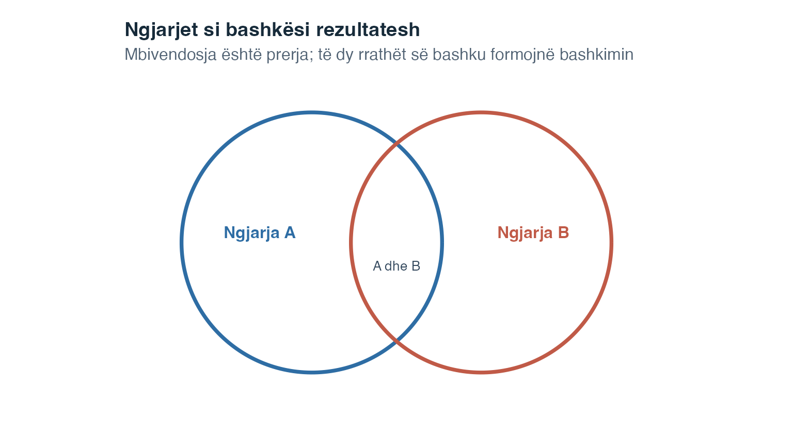
Kjo lloj paraqitjeje quhet diagram i Venn-it. Secili rreth përfaqëson një ngjarje dhe zona e mbivendosur përfaqëson rezultatet që u përkasin të dyja ngjarjeve. Këtu, madhësitë e rrathëve shërbejnë vetëm si orientim pamor dhe nuk duhen lexuar si probabilitete numerike.
Figura tjetër zbaton secilin veprim në të njëjtën hapësirë me dhjetë rezultate. Shkronjat e vogla poshtë një numri tregojnë përkatësinë e tij fillestare në ngjarje. Për shembull, një pllakëz e shënuar “A, D” i përket edhe \(A\) edhe \(D\).
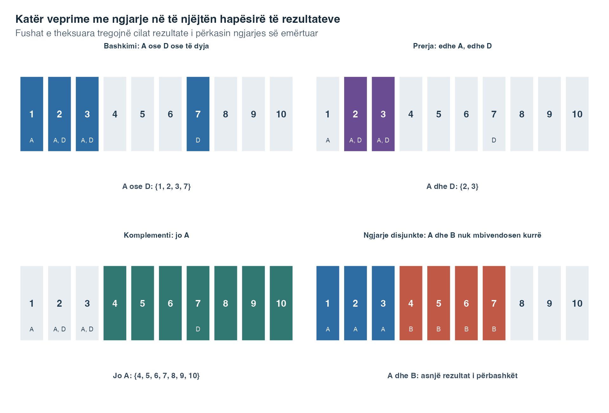
Lexoji panelet në këtë rend:
Këto veprime me bashkësi tregojnë cilat rezultate përmban një ngjarje. Hapi tjetër është të llogarisim probabilitetin që u caktohet atyre rezultateve.
Rregulli i komplementit thotë:
\[P(A') = 1 - P(A)\]
Nëse 68% e studentëve kalojnë një modul, atëherë 32% nuk e kalojnë. Rregulli i komplementit është veçanërisht i dobishëm kur llogaritja e probabilitetit të një ngjarjeje drejtpërdrejt është e vështirë, por llogaritja e të kundërtës së saj është e thjeshtë.
Ngjarja plotësuese trajton fjalën “jo”. Tani kalojmë te pyetjet që përmbajnë “ose” dhe kërkojnë rregullin e mbledhjes.
Kur duam probabilitetin që të ndodhë të paktën njëra nga dy ngjarjet, përdorim rregullin e mbledhjes. Dy ngjarje përjashtojnë njëra-tjetrën (janë të ndara) nëse nuk mund të ndodhin njëkohësisht, prandaj prerja e tyre është bashkësia e zbrazët. Për ngjarje që përjashtojnë njëra-tjetrën:
\[P(A \cup B) = P(A) + P(B)\]
Për shkak se nuk ka mbivendosje, nuk nevojitet korrigjim. Kur ngjarjet nuk e përjashtojnë njëra-tjetrën, mbledhja e thjeshtë e probabiliteteve të tyre e numëron mbivendosjen dy herë. Rregulli i përgjithshëm i mbledhjes e korrigjon këtë:
\[P(A \cup B) = P(A) + P(B) - P(A \cap B)\]
Zbritja e \(P(A \cap B)\) heq numërimin e dyfishtë të rezultateve që u përkasin të dyja ngjarjeve.
Në të dyja formulat, \(A\cup B\) është ngjarja “\(A\) ose \(B\) ose të dyja”, ndërsa \(A\cap B\) është mbivendosja “\(A\) dhe \(B\)”. Formula e përgjithshme është pika e sigurt e nisjes. Formula më e shkurtër mund të përdoret vetëm pasi të kemi vërtetuar se mbivendosja ka probabilitet 0.
Rregulli i mbledhjes shtrihet drejtpërdrejt në më shumë se dy ngjarje të ndara. Nëse \(A_1, A_2, \ldots, A_k\) e përjashtojnë të gjitha njëra-tjetrën, bashkimi i tyre ka probabilitet:
\[P(A_1 \cup A_2 \cup \cdots \cup A_k) = P(A_1) + P(A_2) + \cdots + P(A_k)\]
Kjo vlen vetëm kur të gjitha çiftet e ngjarjeve janë të ndara. Nëse qoftë edhe dy ngjarje kanë rezultate të përbashkëta, duhet të përdoret rregulli i përgjithshëm i mbledhjes.
Përjashtimi i ndërsjellë dhe pavarësia u përgjigjen pyetjeve të ndryshme. Nëse dy ngjarje me probabilitet jozero përjashtojnë njëra-tjetrën, fakti se njëra ka ndodhur na tregon me siguri se tjetra nuk ka ndodhur. Kjo i bën ngjarjet të varura. Përjashtimi i ndërsjellë pyet nëse ngjarjet mund të ndodhin bashkë. Pavarësia pyet nëse ndodhja e njërës e ndryshon probabilitetin e tjetrës.
Rregulli i mbledhjes i përgjigjet një pyetjeje me “ose”. Një pyetje me “dhe” kërkon shumëzim, ndërsa një pyetje me “duke ditur se” kërkon probabilitet të kushtëzuar. Këto dy ide zhvillohen më pas.
Probabiliteti i kushtëzuar është probabiliteti që një ngjarje të ndodhë pasi e kufizojmë vëmendjen te rastet ku ka ndodhur një ngjarje tjetër. Vija vertikale në \(P(A\mid B)\) lexohet “duke ditur se”. Pra, \(P(A\mid B)\) do të thotë “probabiliteti i \(A\), duke ditur se ka ndodhur \(B\)”.
\[P(A \mid B) = \frac{P(A \cap B)}{P(B)}\]
Këtu:
Emëruesi \(P(B)\) është vendimtar, sepse \(B\) bëhet grupi i ri i referimit. Brenda këtij grupi më të vogël, numëruesi \(P(A\cap B)\) përcakton rastet që i përkasin edhe \(A\). Kushti \(P(B)>0\) do të thotë thjesht se grupi i referimit nuk mund të jetë i zbrazët.
Rregulli i ngjarjes plotësuese funksionon edhe brenda një kushti, por kushti duhet të mbetet i njëjtë:
\[P(A'\mid B)=1-P(A\mid B).\]
Nëse 60% e rasteve në grupin \(B\) i përkasin \(A\), atëherë 40% e mbetura të po atij grupi i përkasin \(A'\). Ndryshimi i \(B\) do ta ndryshonte grupin e referimit dhe do t’i përgjigjej një pyetjeje tjetër.
Rirregullimi i përkufizimit jep rregullin e shumëzimit (forma e përgjithshme):
\[P(A \cap B) = P(A \mid B) \cdot P(B)\]
Për tri ngjarje të njëpasnjëshme, zbato të njëjtin arsyetim një fazë pas tjetrës:
\[P(A \cap B \cap C) = P(A)P(B \mid A)P(C \mid A \cap B).\]
Supozo se probabiliteti për të gjetur një dokument arkivor të përshtatshëm është 0.72. Mes dokumenteve që gjenden, probabiliteti për të marrë një skanim të përdorshëm është 0.80. Mes dokumenteve që edhe janë gjetur edhe kanë skanim të përdorshëm, probabiliteti për të verifikuar metadatat është 0.85. Probabiliteti për ta përfunduar të gjithë zinxhirin është \(0.72 \times 0.80 \times 0.85 = 0.4896\). Secili probabilitet interpretohet brenda grupit që arriti në fazën paraprake.
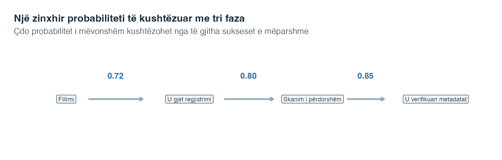
Lexoji shigjetat nga e majta në të djathtë. Shumëzimi i të tria vlerave ndjek një rrugë të plotë. Po ta zëvendësonim probabilitetin e fundit të suksesit me \(1-0.85\), do të përshkruanim sukses në dy fazat e para dhe dështim në të tretën.
Kur dy ngjarje janë të pavarura, duke ditur që njëra ka ndodhur nuk jep informacion nëse tjetra do të ndodhë. Përkufizimi i përgjithshëm është:
\[P(A \cap B) = P(A) \cdot P(B)\]
Kur kushtet përkatëse kanë probabilitet pozitiv, pavarësia do të thotë gjithashtu \(P(B\mid A)=P(B)\). Me fjalë, kufizimi i vëmendjes te rastet në \(A\) nuk e ndryshon probabilitetin e \(B\).
Tabela më poshtë regjistron formatin e orës ushtrimore dhe nëse është dorëzuar një grup detyrash praktike. Ajo na lejon të krahasojmë tri lloje probabiliteti. Një probabilitet anësor përdor totalin e një rreshti ose kolone dhe përshkruan një ngjarje pa kusht shtesë. Një probabilitet i përbashkët përshkruan dy ngjarje që ndodhin së bashku. Një probabilitet i kushtëzuar e kufizon emëruesin te një grup i vetëm rreshti ose kolone.
| Formati i orës ushtrimore | Dorëzuar | Pa dorëzuar | Gjithsej |
|---|---|---|---|
| Drejtpërdrejt | 30 | 20 | 50 |
| E regjistruar | 20 | 30 | 50 |
| Gjithsej | 50 | 50 | 100 |
Fillo me pyetjen dhe pastaj zgjidh emëruesin. Probabiliteti anësor i dorëzimit është \(50/100=0.50\), sepse të 100 studentët formojnë grupin e referimit. Probabiliteti i përbashkët i orës drejtpërdrejt dhe dorëzimit është \(30/100=0.30\), përsëri duke përdorur të 100 studentët. Probabiliteti i kushtëzuar i dorëzimit duke ditur se ora ishte drejtpërdrejt është \(30/50=0.60\), sepse tani grupin e referimit e formojnë vetëm 50 studentët e orës drejtpërdrejt. Për orët e regjistruara është \(20/50=0.40\). Meqë probabilitetet e kushtëzuara ndryshojnë, formati i orës dhe dorëzimi nuk janë të pavarur në këtë tabelë. Ato nuk janë as ngjarje që përjashtojnë njëra-tjetrën, sepse 30 studentë u përkasin si ngjarjes së orës drejtpërdrejt, ashtu edhe asaj të dorëzimit.
Simbolet \(A\subseteq B\) do të thonë se çdo rezultat në \(A\) i përket edhe \(B\). Në këtë rast, \(P(A)\leq P(B)\): një ngjarje më e vogël nuk mund të ketë probabilitet më të madh se ngjarja që e përmban. Për shembull, “një dokumenti i mungojnë edhe krijuesi edhe data” përfshihet brenda ngjarjes “një dokumenti i mungon krijuesi”. Shtimi i një kërkese vetëm mund ta mbajë probabilitetin të njëjtë ose ta zvogëlojë.
| Fjalët në pyetje | Shënimi i ngjarjes | Rregulli kryesor për t’u shqyrtuar |
|---|---|---|
| jo \(A\) | \(A'\) | Ngjarja plotësuese |
| \(A\) ose \(B\) ose të dyja | \(A\cup B\) | Mbledhja |
| \(A\) dhe \(B\) | \(A\cap B\) | Shumëzimi |
| \(A\), duke ditur \(B\) | \(P(A\mid B)\) | Probabiliteti i kushtëzuar |
Këto rregulla kalojnë nga probabilitetet e njohura te një probabilitet i ri në të njëjtin drejtim si pyetja. Megjithatë, ndonjëherë njohim \(P(B\mid A)\) dhe na duhet probabiliteti i anasjelltë \(P(A\mid B)\). Teorema e Bayes-it e trajton këtë përmbysje.
Teorema e Bayes-it lidh dy probabilitete të kushtëzuara që tregojnë në drejtime të kundërta. Ajo është e dobishme kur njohim \(P(B\mid A)\), por pyetja kërkon \(P(A\mid B)\).
\[P(A \mid B) = \frac{P(B \mid A) \cdot P(A)}{P(B \mid A) \cdot P(A) + P(B \mid A') \cdot P(A')}\]
Lexoje formulën pjesë pas pjese:
Emëruesi përfshin çdo mënyrë si mund të ndodhë \(B\). Ai mbledh rrugën përmes \(A\) dhe rrugën përmes \(A'\). Kjo mbledhje quhet ligji i probabilitetit të plotë. Numëruesi mban vetëm rrugën ku ndodhin edhe \(A\) edhe \(B\).
Një aplikim standard në psikologji dhe mjekësi përdor terminologjinë e testimit diagnostik. Le të jetë \(A\) = “çrregullimi është i pranishëm” dhe \(B\) = “testi është pozitiv.”
Supozo se prevalenca është 3%, ndjeshmëria 90% dhe specifiteti 85%. Probabiliteti i rrugës “çrregullimi është i pranishëm dhe rezultati është pozitiv” është \(0.03\times0.90=0.027\). Probabiliteti i rrugës “çrregullimi mungon dhe rezultati është pozitiv” është \(0.97\times0.15=0.1455\). Prandaj,
\[P(A\mid B)=\frac{0.027}{0.027+0.1455}\approx0.157.\]
Mes njerëzve me rezultat pozitiv, rreth 15.7% pritet ta kenë çrregullimin sipas këtyre supozimeve. Përgjigjja është shumë më e ulët se ndjeshmëria prej 90%, sepse çrregullimi është i rrallë dhe grupi shumë më i madh pa çrregullimin prodhon gjithashtu disa rezultate pozitive.
E njëjta llogaritje bëhet konkrete me 10 000 njerëz hipotetikë. Numërimet më poshtë janë frekuenca të pritshme sipas normave të përcaktuara dhe jo të dhëna klinike të vëzhguara.
| Gjendja e çrregullimit | Rezultat pozitiv | Rezultat negativ | Gjithsej |
|---|---|---|---|
| I pranishëm | 270 | 30 | 300 |
| Mungon | 1 455 | 8 245 | 9 700 |
| Gjithsej | 1 725 | 8 275 | 10 000 |
Tabela shpreh të njëjtën llogaritje si numërime. Nga 10 000 njerëz hipotetikë, 300 pritet ta kenë çrregullimin dhe \(0.90\times300=270\) prej tyre pritet të dalin pozitivë. Nga 9 700 njerëzit pa çrregullimin, \(0.15\times9700=1455\) pritet të dalin pozitivë. Prandaj ka gjithsej \(270+1455=1725\) rezultate pozitive dhe \(P(A\mid B)=270/1725\approx0.1565\).
Tabela i jep të katër numërimet, por teorema e Bayes-it mbahet mend më lehtë kur ndjekim edhe si u krijuan ato. Diagrami vijues e shndërron emëruesin në një varg të dukshëm rrugësh.
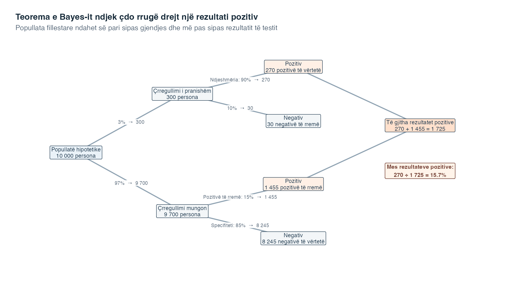
Fillo te kutia më majtas. Çifti i parë i shigjetave përdor prevalencën për t’i ndarë 10 000 njerëzit në 300 me çrregullimin dhe 9 700 pa të. Shigjetat pasuese zbatojnë ndjeshmërinë brenda grupit ku çrregullimi është i pranishëm dhe specifitetin brenda grupit ku ai mungon. Prandaj secila përqindje lexohet brenda grupit që arriti në atë degë dhe jo si përqindje e të gjithë 10 000 njerëzve.
Tani ndiq vetëm dy kutitë portokalli të rezultateve pozitive. Ato përmbajnë 270 pozitivë të vërtetë dhe 1 455 pozitivë të rremë. Të dyja rrugët duhet të hyjnë në emërues, sepse të dyja prodhojnë informacionin e vrojtuar, pra një rezultat pozitiv. Numëruesi mban 270 njerëzit që arritën te rezultati pozitiv përmes rrugës ku çrregullimi është i pranishëm. Krahasimi përfundimtar është kështu \(270/(270+1455)=270/1725\approx0.157\).
Kutitë tregojnë pse një ndjeshmëri e lartë nuk garanton një probabilitet të lartë të pranisë së çrregullimit pas një rezultati pozitiv. Ato nuk përshkruajnë një program real testimi dhe nuk dëshmojnë se këto norma vlejnë për ndonjë popullatë të vërtetë. Ndryshimi i prevalencës, ndjeshmërisë ose specifitetit do t’i ndryshonte numërimet në degë dhe probabilitetin përfundimtar.
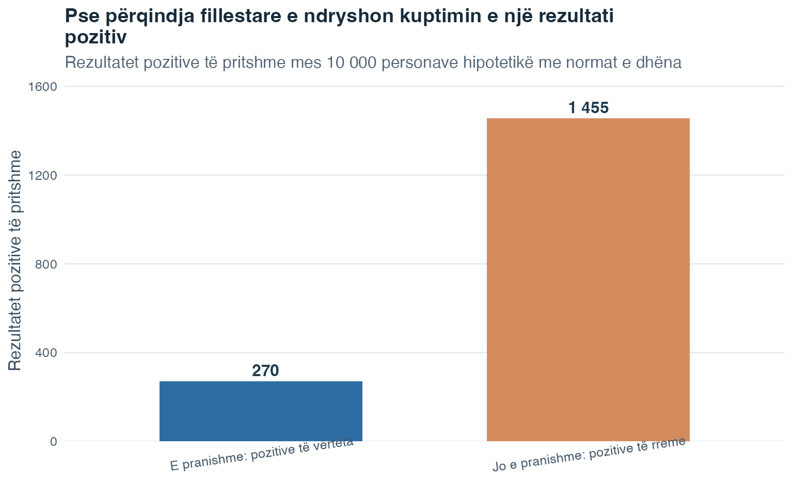
Shtylla e rezultateve të rreme pozitive është më e lartë jo sepse ndjeshmëria është e ulët, por sepse grupi pa çrregullimin është shumë më i madh. Të dyja shtyllat së bashku formojnë emëruesin e teoremës së Bayes-it: çdo rezultat pozitiv, pavarësisht nga rruga që e prodhoi.
Norma bazë ka rëndësi: Këtu prevalenca është probabiliteti fillestar ose norma bazë. Vetëm ndjeshmëria nuk mund t’i përgjigjet pyetjes “Sa i mundshëm është çrregullimi pas një rezultati pozitiv?” Duhet të përdoren prevalenca, ndjeshmëria dhe specifiteti.
Deri këtu, ngjarjet ishin grupe si “rezultat pozitiv” ose “ankth i lartë”. Tani kalojmë nga etiketat e ngjarjeve te rezultatet numerike. Për këtë na duhet ideja e ndryshores së rastësishme.
Në teorinë e probabilitetit, një ndryshore e rastësishme i cakton një numër secilit rezultat të mundshëm të një eksperimenti të rastësishëm. Për hedhjen e një monedhe, mund ta kodojmë kokën me 1 dhe bishtin me 0. Për hedhjen e një zari, numri në faqen e sipërme mund të jetë vlera e ndryshores së rastësishme. Shkronjën e madhe \(X\) e përdorim për ndryshoren e rastësishme, ndërsa shkronjën e vogël \(x\) për një vlerë të mundshme numerike që ajo mund të marrë.
Ndryshoret diskrete të rastësishme mund të marrin vetëm vlera të ndara e të numërueshme. Numri i sukseseve në disa prova është diskret: mund të jetë 0, 1, 2, 3 e kështu me radhë, por jo 2.7. Secila vlerë e mundshme mund të ketë probabilitetin e vet pozitiv dhe shuma e të gjitha këtyre probabiliteteve është 1.
Ndryshoret e vazhdueshme të rastësishme në parim mund të marrin çdo vlerë brenda një diapazoni, duke përfshirë vlera ndërmjet dy numrave të paraqitur. Probabilitetet e tyre u caktohen intervaleve dhe jo pikave të vetme të sakta. Këtij dallimi do t’i rikthehemi pasi të studiojmë ndryshoret diskrete.
Çdo ndryshore e rastësishme ka një shpërndarje probabiliteti. Shpërndarja është një përshkrim i idealizuar i vlerave që janë të mundshme dhe i mënyrës si ndahet probabiliteti ndërmjet tyre. Për një ndryshore diskrete, renditim probabilitetet për vlerat e ndara. Për një ndryshore të vazhdueshme, përdorim një lakore dendësie dhe llogarisim sipërfaqe.
Fillojmë me rastin diskret, sepse probabilitetet e tij mund të paraqiten vlerë pas vlere.
Për një ndryshore të rastësishme diskrete \(X\), tre sasi janë veçanërisht të rëndësishme.
Vlera e pritur (ose mesatare) e \(X\), e shkruar \(E(X)\), është mesatarja e ponderuar me probabilitet të të gjitha vlerave të mundshme:
\[E(X) = \sum_{x} x \cdot P(X = x)\]
Lexoje formulën kështu:
Vlera e pritur përshkruan rezultatin mesatar afatgjatë përgjatë shumë përsëritjeve të eksperimentit. Ajo nuk duhet të jetë medoemos një vlerë që \(X\) mund ta marrë vërtet: nëse hidhet një zar i rregullt, \(E(X) = 3.5\), edhe pse zari nuk jep kurrë 3.5.
Varianca e \(X\) mat sa e shpërndarë është shpërndarja rreth vlerës së saj të pritshme:
\[\text{Var}(X) = \sum_{x} (x - E(X))^2 \cdot P(X = x)\]
Për secilën vlerë të mundshme, \(x-E(X)\) është largësia e saj nga vlera e pritur. Ngritja në katror bën që largësitë negative dhe pozitive të kontribuojnë pozitivisht. Shumëzimi me \(P(X=x)\) u jep më shumë peshë vlerave që ndodhin më shpesh, ndërsa \(\sum_x\) i mbledh largësitë në katror të ponderuara. Devijimi standard është \(\text{SD}(X)=\sqrt{\text{Var}(X)}\), i cili e kthen shpërhapjen në njësitë fillestare të \(X\).
Një funksion i masës së probabilitetit (PMF) i cakton një probabilitet secilës vlerë të ndarë të një ndryshoreje diskrete të rastësishme. Një funksion i shpërndarjes kumulative (CDF) i mbledh probabilitetet deri te një vlerë e zgjedhur. Fjala kumulativ do të thotë “i grumbulluar ndërsa kalojmë nga vlerat më të vogla te më të mëdhatë”. CDF-ja shkruhet
\[F(x) = P(X \leq x)\]
Këtu, \(F(x)\) është probabiliteti kumulativ te \(x\), ndërsa simboli \(\leq\) do të thotë “më i vogël ose i barabartë me”. CDF-ja nuk mund të ulet, sepse kalimi te një \(x\) më i madh e ruan të gjithë probabilitetin e mëparshëm dhe mund të shtojë më shumë.
Mendo një shembull të ri ku \(X\) është numri i kërkesave pasuese që i bashkëngjiten një rasti arkivor të zgjedhur rastësisht.
| \(x\) | 0 | 1 | 2 | 4 |
|---|---|---|---|---|
| \(P(X=x)\) | 0.10 | 0.35 | 0.40 | 0.15 |
| \(F(x)=P(X\leq x)\) | 0.10 | 0.45 | 0.85 | 1.00 |
Rreshti i PMF-së përmban probabilitete jonegative që japin shumën 1. Rreshti i CDF-së ndërtohet nga e majta në të djathtë. Për shembull, \(F(2)=0.10+0.35+0.40=0.85\). Vlera e pritur është
\[E(X)=0(0.10)+1(0.35)+2(0.40)+4(0.15)=1.75.\]
Për një llogaritje më të shkurtër të variancës, fillimisht llogarit vlerën e pritur në katror:
\[E(X^2)=0^2(0.10)+1^2(0.35)+2^2(0.40)+4^2(0.15)=4.35.\]
Pastaj përdor \(\operatorname{Var}(X)=E(X^2)-[E(X)]^2\), që jep \(4.35-1.75^2=1.2875\). Kjo rrugë e shkurtër është algjebrikisht e barasvlershme me formulën e variancës më sipër.
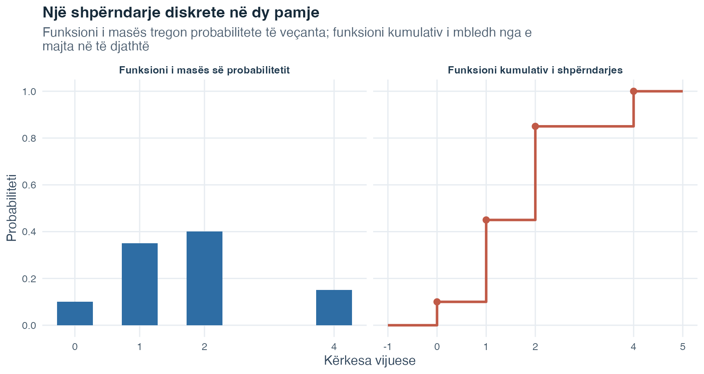
Krahaso lartësinë te \(x=2\) në të dy panelet. Lartësia 0.40 e PMF-së është probabiliteti i saktësisht dy kërkesave, ndërsa lartësia 0.85 e CDF-së është probabiliteti i jo më shumë se dy kërkesave. CDF-ja nuk mund të ulet, sepse e ruan të gjithë probabilitetin e grumbulluar më parë.
Shpërndarja tjetër është një model i veçantë diskret për prova të përsëritura me vetëm dy rezultate të mundshme në secilën provë.
Shpërndarja binomiale modelon numrin e sukseseve gjatë provave të përsëritura. Një provë është një përsëritje e procesit, si një hedhje monedhe ose një pyetje e përgjigjur. Këtu, “sukses” thjesht emërton rezultatin që vendosim të numërojmë dhe nuk ka pse të nënkuptojë diçka të dëshirueshme.
Shënimi \(X\sim B(n,\pi)\) lexohet “\(X\) ndjek një shpërndarje binomiale me parametrat \(n\) dhe \(\pi\)”. Këtu:
Probabiliteti për të pasur saktësisht \(x\) suksese në \(n\) prova është:
\[P(X = x) = \binom{n}{x} \pi^x (1-\pi)^{n-x}\]
Formula bashkon tri pjesë:
Koeficienti është \(\binom{n}{x}=\dfrac{n!}{x!(n-x)!}\). Shenja e pikëçuditjes tregon një faktorial: \(n!=n\cdot(n-1)\cdots2\cdot1\), ndërsa \(0!=1\). Nuk ke nevojë ta renditësh me dorë çdo radhitje të mundshme, sepse koeficienti i numëron për ty.
Le të jetë \(X\sim B(4,0.25)\). Për saktësisht dy suksese,
\[P(X=2)=\binom{4}{2}(0.25)^2(0.75)^2=6(0.0625)(0.5625)\approx0.211.\]
Simboli \(\approx\) tregon se rezultati i paraqitur është rrumbullakuar. Për “të paktën një sukses”, ngjarja plotësuese është më e shkurtër se mbledhja e katër probabiliteteve të ndara:
\[P(X\geq1)=1-P(X=0)=1-(0.75)^4\approx0.684.\]
Ngjarja “asnjë sukses” është plotësuesja e ngjarjes “të paktën një sukses”.
Vlera e pritur dhe varianca e një ndryshoreje të rastësishme binomiale janë:
\[E(X) = n\pi \qquad \text{Var}(X) = n\pi(1-\pi)\]
Një provë e vetme ka dy kategori, sukses dhe dështim. Ndryshorja e rastësishme binomiale është numërimi në të gjitha provat, prandaj mund të marrë vlerat \(0,1,\ldots,n\). Për shembull, në dy hedhje monedhe, numri i daljeve kokë mund të jetë 0, 1 ose 2.
Kontrollo katër kushte para se të përdorësh modelin binomial: (1) numri i provave \(n\) caktohet paraprakisht; (2) çdo provë klasifikohet në saktësisht dy rezultate, sukses ose dështim; (3) probabiliteti i suksesit \(\pi\) mbetet i njëjtë nga një provë te tjetra; dhe (4) provat janë të pavarura, që do të thotë se rezultati i njërës provë nuk e ndryshon probabilitetin e suksesit të një prove tjetër.
Një paralajmërim i zakonshëm lidhet me zgjedhjen nga një popullatë e vogël dhe e kufizuar. Kampionimi pa zëvendësim do të thotë se, pasi një njësi zgjidhet, ajo nuk mund të zgjidhet përsëri. Atëherë çdo zgjedhje e ndryshon grupin që mbetet në dispozicion. Probabiliteti i suksesit mund të ndryshojë dhe zgjedhjet nuk janë më të pavarura. Modeli binomial nuk duhet përdorur, përveçse kur këto ndryshime janë të papërfillshme për situatën që modelohet.
| Formulimi i pyetjes | Pohimi i probabilitetit | Llogaritja efikase |
|---|---|---|
| Saktësisht \(k\) | \(P(X=k)\) | Një masë binomiale |
| Jo më shumë se \(k\) | \(P(X\leq k)\) | Shuma kumulative nga 0 deri te \(k\) |
| Më pak se \(k\) | \(P(X<k)\) | \(P(X\leq k-1)\) |
| Të paktën \(k\) | \(P(X\geq k)\) | \(1-P(X\leq k-1)\) |
| Më shumë se \(k\) | \(P(X>k)\) | \(1-P(X\leq k)\) |
Lexoji pesë rreshtat duke kontrolluar si anën e kufirit, ashtu edhe nëse kufiri përfshihet. Saktësisht \(k\) zgjedh vetëm numërimin e vetëm \(k\). Jo më shumë se \(k\) është ana e poshtme që e përfshin \(k\), prandaj shuma kumulative shkon nga 0 deri te \(k\). Më pak se \(k\) është ana e poshtme që nuk e përfshin \(k\), prandaj ndalet te \(k-1\). Të paktën \(k\) është ana e sipërme që e përfshin \(k\); plotësuesja e saj përmban vetëm vlerat nën \(k\), nga 0 deri te \(k-1\). Më shumë se \(k\) është ana e sipërme që nuk e përfshin \(k\); plotësuesja e saj përfshin të gjitha vlerat deri te \(k\). Këto dallime në formulim përcaktojnë nëse numërimi kufitar i përket probabilitetit.
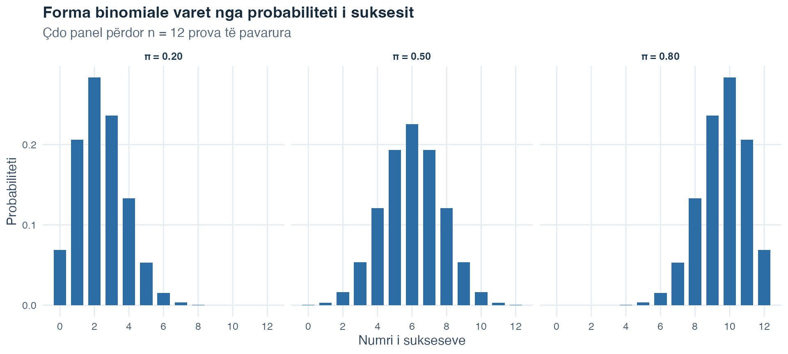
Të tria panelet përdorin \(n=12\), prandaj çdo bosht horizontal shkon nga 0 deri në 12 suksese. Kur \(\pi=0.20\), numërimet e vogla janë më të mundshme dhe shtyllat zgjaten drejt numërimeve më të mëdha. Kur \(\pi=0.50\), shpërndarja është simetrike rreth 6. Kur \(\pi=0.80\), numërimet e mëdha janë më të mundshme. Numërimi i pritur \(n\pi\) lëviz nga 2.4 në 6 dhe në 9.6 me rritjen e probabilitetit të suksesit.
Shpërndarja binomiale përshkruan numërime të ndara. Tani kalojmë te vlera të vazhdueshme, ku probabiliteti paraqitet me sipërfaqe dhe jo me shtylla të veçanta.
Ndryshoret e vazhdueshme të rastësishme mund të marrin çdo vlerë brenda një diapazoni. Meqë ka pafundësisht shumë vlera të mundshme, nuk i caktojmë probabilitet pozitiv një pike të vetme të saktë. Në vend të kësaj, një funksion dendësie \(f(x)\) vizaton një lakore dhe probabiliteti paraqitet nga sipërfaqja nën atë lakore përgjatë një intervali.
| Objekti i shpërndarjes | Ndryshore diskrete | Ndryshore e vazhdueshme |
|---|---|---|
| Funksioni bazë | PMF-ja \(p(x)=P(X=x)\) | Dendësia \(f(x)\) |
| Probabiliteti në një vlerë të vetme të saktë | Mund të jetë pozitiv | \(P(X=x)=0\) |
| Probabiliteti i një intervali | Shuma e masave të përfshira | Sipërfaqja \(\int_a^b f(x)\,dx\) |
| Probabiliteti i përgjithshëm | \(\sum_x p(x)=1\) | \(\int_{-\infty}^{\infty} f(x)\,dx=1\) |
| CDF-ja | \(F(x)=\sum_{t\leq x}p(t)\) | \(F(x)=\int_{-\infty}^{x}f(t)\,dt\) |
Lexoji dy kolonat krah për krah. Në kolonën diskrete, probabiliteti vendoset mbi vlera të ndara dhe mund të mblidhet. Në kolonën e vazhdueshme, probabiliteti shpërndahet përgjatë një intervali dhe duhet lexuar si sipërfaqe. Të dyja kolonat i binden gjithsesi të njëjtave dy kërkesa: probabiliteti i përgjithshëm është 1 dhe CDF-ja regjistron sa probabilitet është grumbulluar në ose nën një kufi të zgjedhur.
Shenja e integralit \(\int\) do të thotë “grumbullo sipërfaqen”. Në \(\int_a^b f(x)\,dx\), vlerat \(a\) dhe \(b\) janë kufiri i poshtëm dhe i sipërm i intervalit, \(f(x)\) jep lartësinë e lakores dhe \(dx\) tregon se sipërfaqja grumbullohet përgjatë vlerave të \(x\). Shprehja \(\int_{-\infty}^{\infty}f(x)\,dx=1\) thotë se sipërfaqja e përgjithshme nën një lakore dendësie është 1. Këtu, \(-\infty\) dhe \(\infty\) do të thonë se përfshihet i gjithë diapazoni i mundshëm.
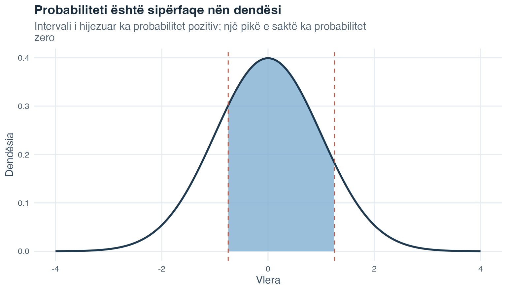
Lartësia e lakores tregon ku janë përqendruar më dendur vlerat, por vetëm lartësia nuk është probabilitet. Probabiliteti është sipërfaqja e ngjyrosur. Ndryshimi i një kufiri të intervalit e ndryshon sipërfaqen. Përfshirja ose përjashtimi i një pike të vetme të saktë nuk e ndryshon probabilitetin e vazhdueshëm, sepse një pikë e vetme ka probabilitet 0.
Për një shpërndarje të vazhdueshme, simboli \(\mu\) (mu) tregon vlerën e pritur dhe \(\sigma^2\) (sigma në katror) tregon variancën. CDF-ja \(F(x)=P(X\leq x)\) jep sipërfaqen në të majtë të \(x\). Një kuantil e përmbys këtë pyetje: fillon me një përpjesëtim kumulativ, si 0.99, dhe kërkon kufirin që ka atë përpjesëtim të sipërfaqes në të majtë.
Vlera e pritur dhe varianca përdorin të njëjtat ide si për një ndryshore diskrete, por një dendësi e vazhdueshme kërkon sipërfaqe dhe jo masa të ndara probabiliteti:
\[E(X)=\int_{-\infty}^{\infty}x f(x)\,dx\]
\[\operatorname{Var}(X)=\int_{-\infty}^{\infty}[x-E(X)]^2 f(x)\,dx.\]
Në formulën e parë, çdo vlerë e mundshme \(x\) ponderohet nga dendësia pranë asaj vlere. Në të dytën, çdo largësi në katror nga vlera e pritur ponderohet në të njëjtën mënyrë. Integralet i bashkojnë këto kontribute të ponderuara në të gjithë diapazonin e ndryshores.
Shpërndarja normale është modeli kryesor i vazhdueshëm i probabilitetit që përdorim këtu. Ajo është simetrike, ka një kulm dhe formën e njohur të kambanës. Shënimi \(X\sim N(\mu,\sigma^2)\) do të thotë se \(X\) ndjek një shpërndarje normale me vlerë të pritur \(\mu\) dhe variancë \(\sigma^2\).
Funksioni i saj i dendësisë është
\[f(x) = \frac{1}{\sigma\sqrt{2\pi}} \exp\!\left(-\frac{(x - \mu)^2}{2\sigma^2}\right).\]
Këtu nuk pritet ta llogaritësh dendësinë me dorë, por secili simbol ka një rol. Vlera \(x\) është pika në shkallën horizontale, \(\mu\) vendos qendrën dhe \(\sigma\) përcakton shpërhapjen. Largësia në katror \((x-\mu)^2\) bën që lakorja të ulet ndërsa vlerat largohen nga qendra. Shprehja \(\exp(\cdot)\) është një funksion eksponencial që krijon formën e lëmuar të kambanës. Në këtë formulë, \(\pi\) është konstanta matematikore afërsisht e barabartë me 3.1416 dhe nuk përfaqëson probabilitetin e suksesit binomial që përdori më parë të njëjtën shkronjë greke.
Shpërndarja normale është një model: Ajo është një përshkrim i idealizuar, jo pohim se çdo grup real të dhënash ka formë të përkryer kambane. Para se ta përdorësh, pyet nëse një lakore simetrike me një kulm është përshkrim i arsyeshëm i madhësisë që po modelohet.
Shpërndarjet normale mund të kenë qendra dhe shpërhapje të ndryshme. Transformimi z i vendos ato në një shkallë të përbashkët referimi:
\[z = \frac{x - \mu}{\sigma}.\]
Këtu, \(x\) është vlera fillestare, \(\mu\) është mesatarja e popullatës dhe \(\sigma\) është devijimi standard i popullatës. Zbritja e \(\mu\) mat largësinë e vlerës nga mesatarja. Pjesëtimi me \(\sigma\) e shpreh atë largësi në njësi devijimesh standarde. Numri që rezulton, \(z\), quhet pikëzim z.
Tema 1 standardizoi vlerat brenda një kampioni të vëzhguar me \(z=(x-\bar{x})/s\). Këtu standardizojmë një model probabiliteti të popullatës me \(z=(x-\mu)/\sigma\). Qëllimi është i njëjtë në të dy rastet: të shprehim një vlerë si largësi nga mesatarja e saj në njësi devijimesh standarde. Standardizimi e ndryshon qendrën dhe njësitë, por nuk e ndryshon formën bazë të shpërndarjes.
Pikëzimi z 0 ndodhet saktësisht te mesatarja. Një pikëzim z pozitiv është mbi mesatare dhe një pikëzim z negativ është nën të. Për shembull, sipas modelit ilustrues me \(\mu=100\) dhe \(\sigma=15\), vlera 130 ka
\[z=\frac{130-100}{15}=2,\]
prandaj ndodhet dy devijime standarde mbi mesataren.
Pas transformimit z, një ndryshore me shpërndarje normale ndjek shpërndarjen normale standarde, e shkruar \(Z\sim N(0,1)\). Shkronja e madhe \(Z\) emërton ndryshoren e standardizuar të rastësishme, 0 është mesatarja e saj dhe 1 është varianca, prandaj edhe devijimi standard i saj. Një tabelë e normales standarde jep sipërfaqen në të majtë të pikëzimeve z të zgjedhura. Pas standardizimit, kjo tabelë e vetme referimi mund të përdoret për çdo shpërndarje normale.
Tani që vlerat në çdo shkallë normale mund të shndërrohen në pikëzime z, mund të zgjidhim katër lloje pyetjesh që përsëriten në probabilitetin normal.
Para se të llogaritësh diçka, përcakto nëse pyetja jep një kufi dhe kërkon sipërfaqen, apo jep një sipërfaqe dhe kërkon kufirin. Katër kombinimet më poshtë mbulojnë llojet e pyetjeve që përsëriten. Përdorim modelin ilustrues \(X\sim N(100,15^2)\), që do të thotë \(\mu=100\), \(\sigma=15\) dhe \(\sigma^2=225\).
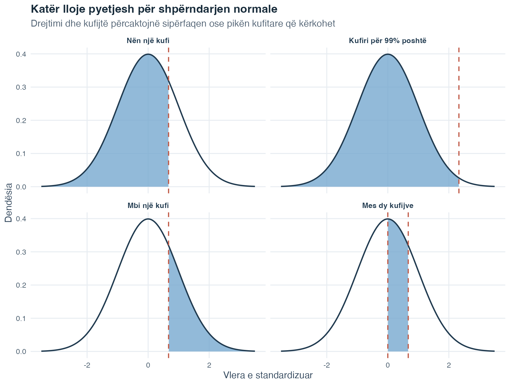
Figura ndjek të njëjtin rend si katër shpjegimet. Në panelin e parë dhe të tretë, një kufi i njohur e ndan lakoren. Në panelin e katërt, dy kufij e mbyllin sipërfaqen e kërkuar. Paneli i dytë e përmbys drejtimin e zakonshëm: sipërfaqja 0.99 dihet, ndërsa kufiri është madhësia e panjohur. Tregimi i zonës së kërkuar para llogaritjes ndihmon të shmangen gabimet mes bishtit të majtë dhe atij të djathtë.
Deri këtu, modeli normal ka përshkruar vlera brenda një popullate. Kërkimi statistikor zakonisht vëzhgon vetëm një kampion nga ajo popullatë. Pjesa tjetër pyet çfarë ndodh kur vetë akti i kampionimit përsëritet.
Popullata është grupi i plotë i njësive për të cilin interesohet pyetja kërkimore. Njësia mund të jetë një person, dokument, shkollë ose një objekt tjetër që studiohet. Kampioni është grupi më i vogël që vëzhgohet realisht. Përdorim një kampion, sepse matja e çdo njësie të popullatës shpesh nuk është praktike.
Një kampion i thjeshtë i rastësishëm me madhësi të pandryshueshme i jep çdo kampioni të mundshëm të asaj madhësie të njëjtin probabilitet për t’u zgjedhur. Si rrjedhojë, çdo njësi e popullatës ka të njëjtin shans për t’u përfshirë. Ky rregull i përzgjedhjes së rastësishme ka rëndësi, sepse lidh atë që vëzhgojmë në kampion me popullatën që duam të përshkruajmë.
Një veçori numerike e popullatës quhet parametër. Parametri është i pandryshueshëm për atë popullatë, por zakonisht është i panjohur. Një veçori numerike e llogaritur nga kampioni i vëzhguar quhet statistikë. Statistika mund ta përshkruajë kampionin dhe mund të shërbejë edhe si vlerësues, pra si madhësi e bazuar në kampion që përdoret për të vlerësuar një parametër të panjohur të popullatës.
| Madhësia | Parametri i popullatës | Statistika e kampionit që përdoret për ta vlerësuar |
|---|---|---|
| Mesatarja | \(\mu\) | \(\bar{x}\) |
| Varianca | \(\sigma^2\) | \(s^2\) |
Simbolet greke \(\mu\) dhe \(\sigma^2\) i referohen popullatës. Simbolet \(\bar{x}\) dhe \(s^2\) i referohen një kampioni të vëzhguar. Mbajtja e këtyre simboleve të ndara na ndihmon të kujtojmë cilat madhësi njihen nga të dhënat dhe cilat mbeten synime të popullatës.
Tani përfytyro se e përsërit shumë herë të njëjtën procedurë të kampionimit të rastësishëm. Çdo herë merr një kampion të ri me madhësi \(n\) dhe llogarit mesataren e tij. Mesataret do të ndryshojnë, sepse kampionet përmbajnë njësi të ndryshme. Shpërndarja e probabilitetit e të gjitha këtyre mesatareve të mundshme është shpërndarja e kampionimit e mesatares. Ajo përshkruan në mënyrë teorike si ndryshon mesatarja e kampionit gjatë kampioneve të rastësishme të përsëritura.
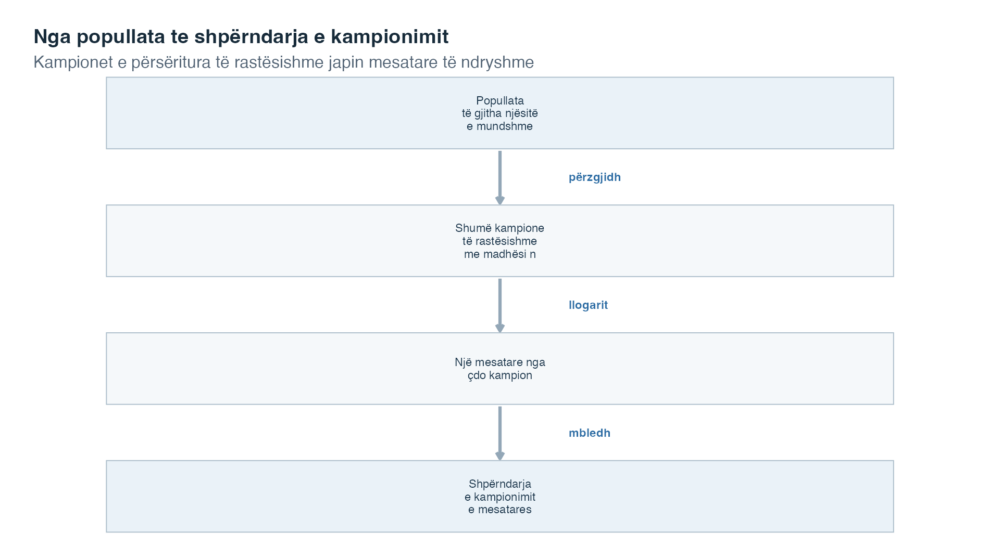
Lexoje figurën nga lart poshtë. Popullata është burimi. Kampione të përsëritura të rastësishme merren me të njëjtën madhësi kampioni dhe rregull përzgjedhjeje. Nga secili kampion llogaritet një mesatare. Mbledhja e këtyre mesatareve të mundshme prodhon shpërndarjen e kampionimit.
Tri shpërndarje të lidhura duhet të mbahen të ndara:
| Shpërndarja | Çfarë përfaqësojnë vlerat e saj | Një shembull |
|---|---|---|
| Shpërndarja e popullatës | Vlerat e ndryshores në të gjitha njësitë e popullatës | Pikëzimi i çdo personi në popullatë |
| Shpërndarja e një kampioni | Vlerat e vëzhguara në një kampion të zgjedhur | Pikëzimet e personave të zgjedhur një herë |
| Shpërndarja e kampionimit | Një statistikë nga secili kampion i mundshëm i përsëritur | Mesatarja e pikëzimit nga secili kampion i përsëritur |
Fjala kampionim në “shpërndarja e kampionimit” i referohet kampioneve të përsëritura dhe jo vrojtimeve brenda një kampioni. Edhe statistika të tjera, si mediana ose varianca, mund të kenë shpërndarje kampionimi. Kjo temë përqendrohet te mesatarja e kampionit.
Dy veti kryesore të shpërndarjes së kampionimit të mesatares janë:
\[E(\bar{X}) = \mu, \qquad \operatorname{Var}(\bar{X})=\frac{\sigma^2}{n}, \qquad \text{SD}(\bar{X}) = \frac{\sigma}{\sqrt{n}}.\]
Shprehja me shkronjë të madhe \(\bar{X}\) përfaqëson mesataren e kampionit para se të merret një kampion i caktuar, prandaj mund të ndryshojë nga një kampion te tjetri. Vlera e vëzhguar nga një kampion real shkruhet \(\bar{x}\). Formula e parë thotë se shpërndarja e kampionimit është e përqendruar te mesatarja e popullatës \(\mu\). E dyta jep variancën dhe e treta devijimin standard. Ky devijim standard quhet gabimi standard i mesatares.
Një formulë për kampionimin e rastësishëm është e dobishme vetëm nëse procesi i përzgjedhjes mund të arrijë popullatën me interes. Popullata e synuar është grupi i plotë i emërtuar nga pyetja kërkimore. Korniza e kampionimit është lista ose procedura praktike që përdoret për të arritur pjesëmarrësit e mundshëm. Kampioni i arritur është grupi që në fund jep të dhëna të përdorshme. Këto tri grupe mund të ndryshojnë.
Nëse disa anëtarë të popullatës së synuar nuk mund të shfaqen në kornizën e kampionimit, korniza ka mbulim të pamjaftueshëm. Nëse njerëzit që përgjigjen ndryshojnë sistematikisht nga ata që nuk përgjigjen, mund të shfaqet anshmëri nga mospërgjigjja. Këtu, anshmëria do të thotë një prirje sistematike që vlerësimi ta humbasë synimin e popullatës në një drejtim. Edhe një kampion shumë i madh mund të jetë i njëanshëm kur merret vazhdimisht nga korniza e gabuar ose varet nga përgjigjja përzgjedhëse.
Simulimi mësimor në vijim e bën të dukshëm dallimin. Ai krijon një popullatë të synuar me 10 000 pikëzime interesi. Kampioni i rastësishëm i jep çdo njësie të popullatës të njëjtin shans përzgjedhjeje. Kampioni me përgjigje vullnetare, në vend të kësaj, bën që njësitë me interes më të lartë të kenë më shumë gjasa të përgjigjen. Të dy kampionet përmbajnë 4373 njësi, prandaj krahasimi ndryshon metodën e përzgjedhjes dhe jo madhësinë e kampionit.
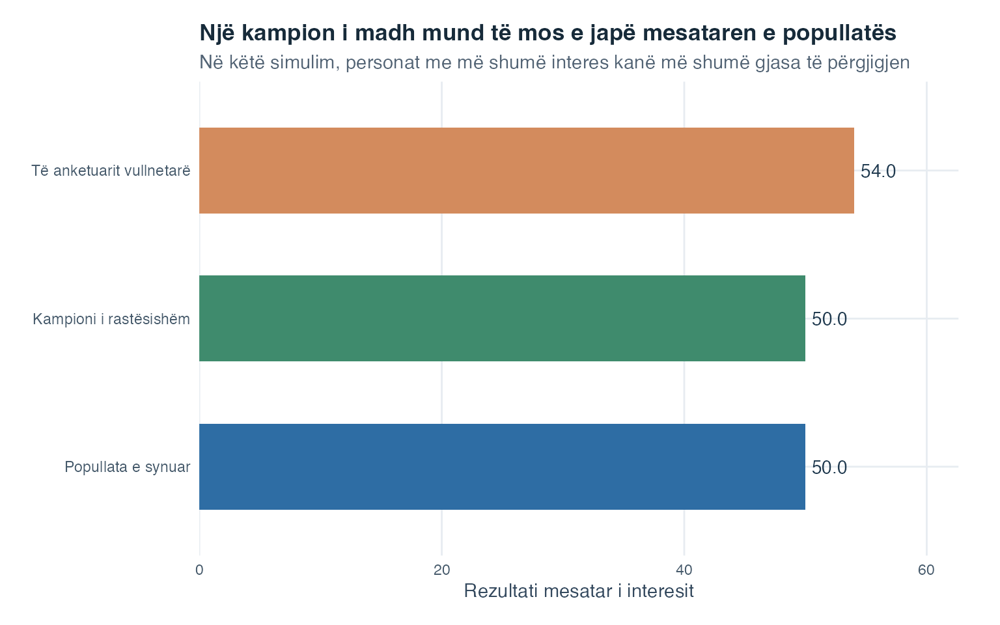
Mesatarja e popullatës së synuar është 50. Kampioni i rastësishëm me të njëjtën madhësi ka mesatare 50, ndërsa të anketuarit vullnetarë kanë mesatare 54. Dallimi i kampionit të rastësishëm është ndryshueshmëri e zakonshme nga rastësia. Mesatarja e të anketuarve është sistematikisht më e lartë, sepse njësitë me interes të lartë përgjigjen më shpesh. Shtimi i më shumë të anketuarve përmes të njëjtit proces përzgjedhës do ta bënte mesataren më të qëndrueshme, por jo përfaqësuese të popullatës së synuar.
Kjo ndan dy pyetje. Saktësia pyet sa do të ndryshonte një vlerësim në kampione të përsëritura. Përfaqësueshmëria pyet nëse procesi i përzgjedhjes lejon që vlerësimi ta përshkruajë popullatën e synuar. Tani studiojmë saktësinë përmes gabimit standard.
Gabimi standard i mesatares përshkruan sa ndryshojnë mesataret e kampioneve në kampione të përsëritura të rastësishme me të njëjtën madhësi. Një gabim standard më i vogël do të thotë se mesataret e mundshme të kampioneve janë përqendruar më ngushtë rreth mesatares së popullatës.
\[\text{SE} = \frac{\sigma}{\sqrt{n}}\]
Ku:
Në formulë, \(\sigma\) është devijimi standard i popullatës, \(n\) është numri i vrojtimeve në secilin kampion dhe \(\sqrt{n}\) është rrënja katrore e madhësisë së kampionit. Zakonisht \(\sigma\) është i panjohur. Atëherë në vend të tij vendosim devijimin standard të kampionit \(s\):
\[\widehat{\text{SE}}=\frac{s}{\sqrt{n}}.\]
Shenja mbi \(\widehat{\text{SE}}\) tregon një vlerësim. Ky quhet vlerësim zëvendësues (në materialet angleze, plug-in estimate), sepse vlera e njohur e kampionit \(s\) zë vendin e vlerës së panjohur të popullatës \(\sigma\) në formulë.
Dy pasoja rrjedhin drejtpërdrejt nga formula:
Forma e shpërndarjes së kampionimit varet fillimisht nga popullata. Nëse vetë popullata ka shpërndarje normale, atëherë shpërndarja e kampionimit e \(\bar{X}\) është normale për çdo madhësi pozitive kampioni \(n\):
\[\bar{X}\sim N\!\left(\mu,\frac{\sigma^2}{n}\right).\]
Nëse popullata nuk është normale, teorema e kufirit qendror shpjegon çfarë ndodh me rritjen e \(n\). Versioni që përdorim këtu supozon se vrojtimet janë të pavarura, që do të thotë se një vrojtim nuk e përcakton tjetrin, dhe me shpërndarje të njëjtë, që do të thotë se çdo vrojtim vjen nga e njëjta shpërndarje e popullatës. Supozon gjithashtu se popullata ka variancë të përcaktuar dhe të fundme, prandaj shpërhapja e saj mund të paraqitet nga një vlerë e fundme \(\sigma^2\). Në këto kushte, shpërndarja e kampionimit e mesatares përafrohet gjithnjë e më mirë me një shpërndarje normale:
\[\bar{X} \approx N\!\left(\mu,\, \frac{\sigma^2}{n}\right)\]
Simboli \(\approx\) do të thotë “ka shpërndarje përafërsisht”. Nuk ka një madhësi të vetme kampioni ku përafrimi papritur bëhet i saktë. Materiali i dhënë i kursit nganjëherë e përdor \(n>30\) si udhëzim të përafërt për mësim, jo si kusht të modelit ose garanci. Shembujt tregojnë pse përshtatshmëria varet nga forma fillestare e popullatës. Një popullatë shumë asimetrike zakonisht kërkon \(n\) më të madh se një formë që tashmë është pranë normales.
Çfarë bëhet përafërsisht normale? Teorema ka të bëjë me shpërndarjen e mesatareve të kampioneve në kampione të përsëritura. Ajo nuk thotë se vrojtimet individuale në popullatë bëhen normale.
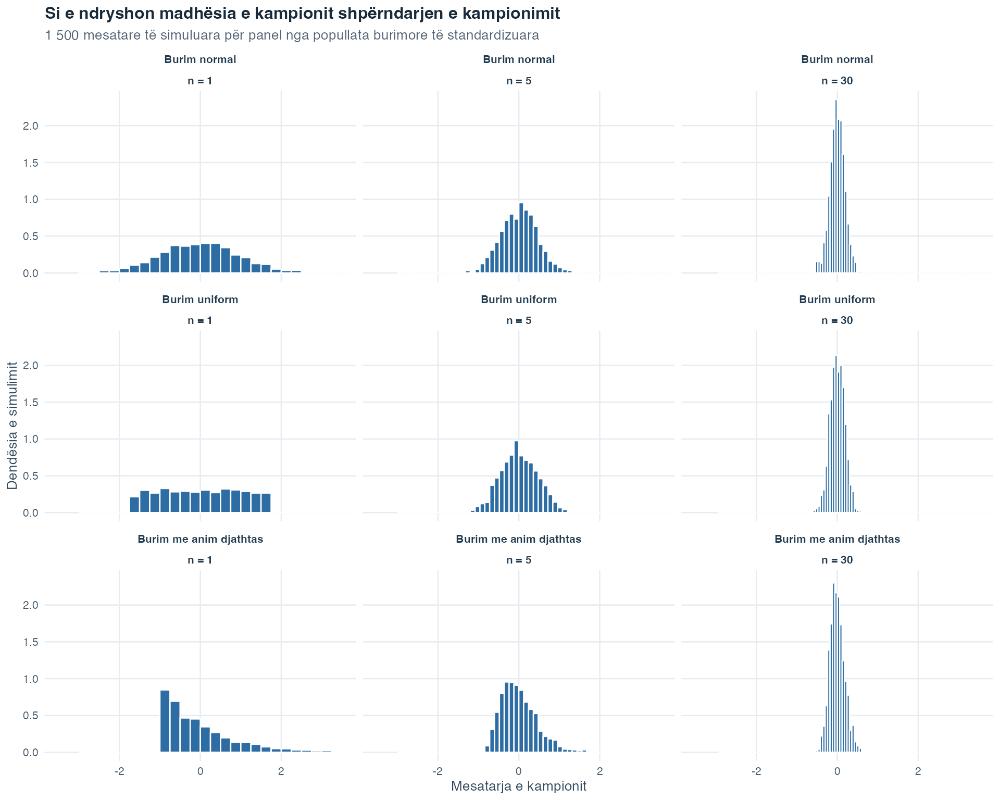
Secili rresht fillon nga një formë e ndryshme e popullatës. Lexoje nga e majta në të djathtë ndërsa madhësia e kampionit rritet nga 1 në 5 dhe në 30. Çdo panel përdor të njëjtën shkallë horizontale dhe vertikale, prandaj gjerësitë dhe lartësitë e dendësisë mund të krahasohen drejtpërdrejt. Kur \(n=1\), çdo “mesatare” përmban vetëm një vrojtim, prandaj shpërndarja e kampionimit ka të njëjtën formë si popullata. Me rritjen e \(n\), mesataret e kampioneve shpërndahen më pak. Meqë sipërfaqja e plotë e secilës dendësi mbetet 1, ky ngushtim i bën edhe shtyllat qendrore më të larta. Rreshti i popullatës normale mbetet normal gjatë gjithë kohës. Rreshtat e shpërndarjes së njëtrajtshme dhe asaj të anuar djathtas bëhen gradualisht më të ngjashëm me kambanën, duke treguar një përafrim gradual dhe jo një kufi të menjëhershëm.
Ngatërrimi i \(P(A \mid B)\) me \(P(B \mid A)\). Këto shprehin pyetje të ndryshme. Probabiliteti i një testi pozitiv kur personi e ka çrregullimin nuk është i njëjtë me probabilitetin që personi ta ketë çrregullimin kur testi është pozitiv. Përmbysja e kushtëzimit sjell gabime të mëdha dhe me pasoja.
Trajtimi i ngjarjeve që përjashtojnë njëra-tjetrën si të pavarura. Ngjarjet që përjashtojnë njëra-tjetrën dhe kanë probabilitet jozero nuk mund të ndodhin të dyja: kur dimë se njëra ka ndodhur, dimë se tjetra nuk ka ndodhur. Ato janë të varura, jo të pavarura.
Shpërfillja e normës bazë. Prevalenca, e quajtur edhe norma bazë, është përpjesëtimi i popullatës që e ka gjendjen para testimit. Kur një gjendje është e rrallë, grupi i madh pa gjendjen mund të prodhojë shumë rezultate të rreme pozitive edhe kur testi funksionon mirë. Prandaj vetëm ndjeshmëria nuk mund të tregojë probabilitetin e pranisë së gjendjes pas një rezultati pozitiv. Duhet të përdoren së bashku prevalenca, ndjeshmëria dhe specifiteti.
Përdorimi i binomit kur shkelen supozimet e tij. Binomi kërkon një numër të pandryshueshëm provash \(n\), dy rezultate të mundshme në secilën provë, të njëjtin probabilitet suksesi \(\pi\) në çdo provë dhe prova të pavarura. Nëse një provë e ndryshon probabilitetin e suksesit në një tjetër, ose nëse probabiliteti i suksesit ndryshon nga një provë te tjetra, modeli binomial nuk zbatohet.
Leximi i dendësisë si probabilitet. Për shpërndarjet e vazhdueshme, lartësia e kurbës në një pikë është një vlerë dendësie, jo një probabilitet. Probabilitetet u përkasin sipërfaqeve mbi intervale, ndërsa probabiliteti i çdo vlere të vetme të saktë është zero.
Ngatërrimi i devijimit standard me gabimin standard. Devijimi standard (\(s\) ose \(\sigma\)) përshkruan shpërhapjen e vrojtimeve individuale. Gabimi standard (\(s/\sqrt{n}\)) përshkruan saktësinë e mesatares së kampionit si vlerësim. Ndërsa \(n\) rritet, SE zvogëlohet, kurse \(s\) mbetet afërsisht konstant.
Tema 1 na mësoi të përshkruajmë një grup të vëzhguar të dhënash. Kjo temë shtoi një shtresë të dytë: një model për atë që mund të ndryshojë po të përsëritej një ngjarje ose proces kampionimi. Rregullat e ngjarjeve organizojnë pasigurinë, shpërndarjet e probabilitetit përshkruajnë rezultate numerike të rastësishme dhe shpërndarjet e kampionimit përshkruajnë si ndryshon nga një kampion te tjetri një statistikë, si mesatarja e kampionit.
Kjo lidhje e fundit hap rrugën për Testimin e hipotezave dhe intervalet e besimit. Mesatarja e kampionit është përshkrim i një kampioni, ashtu si në Temën 1. Shpërndarja e saj e kampionimit tregon sa do të ndryshonte zakonisht ajo mesatare në kampionim të përsëritur të rastësishëm, ndërsa gabimi standard e përmbledh këtë ndryshueshmëri. Tema 3 e përdor këtë themel për të gjykuar nëse një rezultat i vëzhguar është i pazakontë sipas një hipoteze të përcaktuar dhe për të shprehur pasigurinë rreth një vlere të vlerësuar të popullatës.
Logjika është kumulative: fillimisht përshkruaj të dhënat e vëzhguara, pastaj përcakto modelin e probabilitetit dhe arsyeto nga kampioni drejt popullatës vetëm kur procesi i kampionimit dhe supozimet e modelit e arsyetojnë këtë hap. Probabiliteti nuk e zhduk pasigurinë. Ai e bën atë të dukshme dhe të matshme.
Një studiues dëshiron ta studiojë ankthin nga provimi te studentët e vitit të parë të psikologjisë dhe t’i krahasojë studentët në dy grupe stresi të vetëraportuara. Një kohortë është një grup që studiohet së bashku. Të dhënat në këtë faqe janë krijuar tërësisht me kompjuter. Nuk është matur asnjë person real.
Siç u shpjegua në studimin e simuluar të Temës 1, simulimi ndjek një recetë të përcaktuar kompjuterike dhe një numër nisës i pandryshuar i lejon secilit ta rindërtojë të njëjtin grup artificial të dhënash. Kjo faqe e ripërdor atë përgatitje, prandaj 160 rastet, tabelat, figurat dhe llogaritjet mbeten të njëtrajtshme sa herë që faqja rindërtohet.
Që në fillim duhen ndarë dy lloje numrash. Receta përmban probabilitete dhe parametra shpërndarjeje të zgjedhur para se të krijohen rastet. Kohorta artificiale e përfunduar përmban numërimet dhe frekuencat relative që u prodhuan realisht. Këto vlera të gjeneruara zakonisht do të jenë pranë vlerave të recetës, por nuk duhet të përputhen saktësisht, sepse kjo kohortë përmban vetëm 160 rezultate të ngjashme me rastësinë dhe jo çdo rezultat që mund të prodhonte receta.
Fillo duke përfytyruar se një rresht zgjidhet rastësisht nga kjo kohortë artificiale e pandryshueshme. Sa i mundshëm është një rezultat me ankth të lartë dhe si ndryshon ky probabilitet pasi mësohet grupi i stresit i rastit të zgjedhur? Kjo është pyetja qendrore për analizën e kohortës. Demonstrimet e mëvonshme me kampionim të përsëritur e zgjerojnë kontekstin dhe do të emërtohen veçmas.
Receta ka tri pjesë:
Secili rresht përmban katër ndryshore të dobishme. ID-ja e pjesëmarrësit e identifikon rreshtin, por nuk është sasi e matur. Grupi i stresit është kategorik, sepse regjistron një etiketë grupi dhe jo një sasi. Edhe pse fjalët “i ulët” dhe “i lartë” kanë rend të përditshëm, ky shembull i përdor si dy kategori nominale grupimi: etiketat i ndajnë rastet në dy grupe dhe nuk llogarisim me kodet e grupit sikur të ishin vlera stresi të matura. Ankthi nga provimi është sasior, sepse regjistron një pikëzim numerik. I trajtojmë dallimet ndërmjet pikëzimeve si domethënëse, por nuk pohojmë se pikëzimi 24 përfaqëson dy herë më shumë ankth se pikëzimi 12. Së fundi, niveli i ankthit është kategorik binar: regjistron vetëm njërën nga dy mundësitë, pikëzim 23 ose më lart kundrejt pikëzimit nën 23.
Kufiri te 23 ekziston vetëm për të mësuar probabilitetet e ngjarjeve. Nuk duhet përdorur për të diagnostikuar ose klasifikuar shëndetin e një personi. Simulimi i jep qëllimisht grupit me stres të lartë qendër më të lartë të pikëzimit, prandaj gjetja e këtij modeli më vonë vetëm vërteton recetën. Ajo nuk jep evidencë për studentë realë.
Pjesa e parë e ndjek një kohortë nga numërimet e ngjarjeve te llogaritjet e ngjarjes plotësuese, mbledhjes, probabilitetit të përbashkët, probabilitetit të kushtëzuar, pavarësisë dhe modelit binomial. Pastaj i kthehemi modelit të vazhdueshëm të pikëzimit para se të kalojmë te një popullatë më e thjeshtë që izolon shpërndarjet e kampionimit. Një krahasim i fundit ndan kampionimin e rastësishëm nga përgjigjja përzgjedhëse.
Tri pyetje i lidhin këto etapa:
Kur formulimi ndryshon nga “ankth” në “ankth duke ditur se stresi është i lartë”, cili grup duhet të jetë në emërues? Si i përshkruajnë modelet e probabilitetit rezultatet që ende nuk janë vrojtuar? Pse një kampion më i madh i rastësishëm mund ta përmirësojë saktësinë, ndërsa një kampion më i madh i marrë përmes një procesi përzgjedhës mund të mbetet sistematikisht jopërfaqësues?
Nëse i mban parasysh këto pyetje, nuk do të përdorësh një probabilitet sikur t’i përgjigjej çdo lloj pasigurie.
Hapi 1: Shqyrtimi i rreshtave të simuluar
Fillo me rreshtat para se të llogaritësh probabilitete. Tabela është ndërvepruese: mund të kërkosh në të, të renditësh një kolonë dhe të lëvizësh ndërmjet faqeve.
Secili rresht përfaqëson një rast të simuluar. Renditja sipas pikëzimit të ankthit nga provimi tregon pikëzimet më të ulëta dhe më të larta të vëzhguara. Kolona e nivelit të ankthit tregon kategorinë e nxjerrë nga pikëzimi i rrumbullakuar. Shikimi poshtë kolonës së grupit të stresit vërteton se të dyja grupet janë të pranishme. Meqë receta përdori qëllimisht një mesatare më të lartë për grupin me stres të lartë, shumë prej pikëzimeve të tij shfaqen më lart në shkallën e pikëzimit.
Tani i kthejmë këta rreshta në numërime dhe përpjesëtime ngjarjesh.
Hapi 2: Kthimi i numërimeve në probabilitete ngjarjesh
Frekuenca relative është numërimi i një ngjarjeje i pjesëtuar me numrin e përgjithshëm të rasteve. Nëse një rast zgjidhet në mënyrë të njëtrajtshme nga kjo kohortë e pandryshueshme, që do të thotë se çdo rresht ka të njëjtin shans përzgjedhjeje, frekuenca relative është probabiliteti i saktë për të marrë ngjarjen:
\[\text{frekuenca relative e ngjarjes }A=\frac{\text{numri i rasteve në }A}{160}.\]
Për këtë shembull mësimor, pikëzimi 23 ose më i lartë i përket ngjarjes së quajtur “ankth i lartë”, ndërsa pikëzimi nën 23 i përket të kundërtës, “ankth i ulët”.
| Ngjarja | Numri | Probabiliteti (frekuenca relative) |
|---|---|---|
| Ankth i lartë (pikëzimi >= 23) | 67 | 0.419 |
| Ankth i ulët (pikëzimi < 23) | 93 | 0.581 |
| Grupi me stres të lartë | 84 | 0.525 |
| Grupi me stres të ulët | 76 | 0.475 |
Probabiliteti që një rast i simuluar i zgjedhur rastësisht të ketë ankth të lartë është saktësisht 67/160, që pas rrumbullakimit të numrit dhjetor të paraqitur është afërsisht 0.419. Probabiliteti për të zgjedhur një rast nga grupi me stres të lartë është 84/160 \(=\) 0.525. Receta caktoi stresin e lartë me probabilitet 0.45, por kjo kohortë e krijuar përmban 52.5% raste me stres të lartë. Ky dallim është ndryshueshmëri e simulimit, pra dallimi i zakonshëm nga rastësia ndërmjet një probabiliteti gjenerues dhe një grupi të fundmë rezultatesh të krijuara. Këto janë probabilitete të sakta për këtë kohortë të pandryshueshme artificiale dhe jo vlerësime nga studentë realë.
Me këto probabilitete ngjarjesh mund të bëjmë pyetje me “jo” dhe “ose”.
Hapi 3: Zbatimi i rregullit të ngjarjes plotësuese dhe rregullit të mbledhjes
Rregulli i ngjarjes plotësuese i përgjigjet një pyetjeje me “jo”. Meqë ankthi i ulët këtu përkufizohet si jo ankth i lartë, dy ngjarjet i mbulojnë të 160 rastet pa mbivendosje:
\[P(\text{ankth i ulët}) = 1 - P(\text{ankth i lartë}) = \frac{93}{160} \approx 0.581\]
Përafërsisht 58.1% e rasteve të simuluara bien në intervalin me ankth më të ulët.
Rregulli i mbledhjes i përgjigjet një pyetjeje me “ose”. Le të nënkuptojë \(H_S\) stresin e lartë dhe \(H_A\) ankthin e lartë. Bashkimi \(H_S\cup H_A\) përmban raste me stres të lartë, ankth të lartë ose të dyja:
\[P(H_S \cup H_A)=\frac{84+67-53}{160}=0.6125.\]
Mbledhja e dy numërimeve të para i përfshin dy herë 53 rastet që u përkasin të dyja ngjarjeve. Zbritja një herë e këtij numërimi të përbashkët e korrigjon numërimin e dyfishtë. Bashkimi përmban afërsisht 61.3% të kohortës.
Hapi 4: Gjetja e një probabiliteti të përbashkët
Tani kalojmë nga “ose” te “dhe”. Një probabilitet i përbashkët përshkruan dy ngjarje që ndodhin së bashku. Tabela tregon çdo kombinim të grupit të stresit dhe kategorisë së ankthit. Një tabelë që i klasifikon rastet njëkohësisht sipas dy ndryshoreve kategorike quhet tabelë numërimesh dykahëshe. Totalet në fund të secilit rresht dhe secilës kolonë tregojnë si shpërndahen 160 rastet.
| Grupi | Ankth i lartë | Ankth i ulët | Gjithsej |
|---|---|---|---|
| Stres i lartë | 53 | 31 | 84 |
| Stres i ulët | 14 | 62 | 76 |
Probabiliteti i përbashkët është:
\[P(\text{ankth i lartë} \cap \text{stres i lartë}) = \frac{53}{160} \approx 0.331\]
Emëruesi mbetet të gjitha 160 rastet, sepse asnjë kusht nuk e ka kufizuar grupin e referimit. Përafërsisht 33.1% e kohortës u përket të dyja ngjarjeve.
Pyetja tjetër jep informacion për rastin e zgjedhur, prandaj emëruesi duhet të ndryshojë.
Hapi 5: Kufizimi i grupit të referimit me probabilitet të kushtëzuar
Probabiliteti i kushtëzuar e ndryshon emëruesin. Pasi dimë se një rast i përket grupit me stres të lartë, në grupin e referimit mbeten vetëm 84 rastet me stres të lartë. Prej tyre, 53 kanë edhe ankth të lartë:
\[P(\text{ankth i lartë} \mid \text{stres i lartë}) = \frac{53}{84} \approx 0.631\]
| Grupi | P(ankth i lartë | grupi) | P(ankth i ulët | grupi) |
|---|---|---|
| Stres i lartë | 0.631 | 0.369 |
| Stres i ulët | 0.184 | 0.816 |
Brenda grupit me stres të lartë, 63.1% e rasteve kanë ankth të lartë. Brenda grupit me stres të ulët, këtë nivel ankthi e kanë 18.4%. Shtyllat tregojnë të njëjtat dy përpjesëtime të llogaritura sipas rreshtave si tabela.
Probabiliteti i kushtëzuar në drejtimin e kundërt shtron një pyetje tjetër: ndër rastet me ankth të lartë, çfarë përpjesëtimi i përket grupit me stres të lartë? Drejtpërdrejt nga tabela, ai është 53/67 \(\approx\) 0.791. Teorema e Bayes-it jep të njëjtën vlerë:
\[ \begin{aligned} P(H_S\mid H_A) &=\frac{P(H_A\mid H_S)P(H_S)}{P(H_A)}\\ &=\frac{(53/84)(84/160)}{67/160}\\ &\approx 0.791. \end{aligned} \]
Drejtimi i kushtëzimit përcakton emëruesin. Probabiliteti i parë përdor të gjitha rastet me stres të lartë. Probabiliteti në drejtimin e kundërt përdor të gjitha rastet me ankth të lartë. Edhe pse të dyja llogaritjet përdorin të njëjtën tabelë, ato u përgjigjen pyetjeve të ndryshme.
Tani mund t’i përdorim këto vlera të kushtëzuara për të kontrolluar nëse dy ngjarjet janë të pavarura në kohortën e simuluar.
Hapi 6: Kontrolli i pavarësisë brenda kohortës së simuluar
Dy ngjarje janë të pavarura kur informacioni se njëra ka ndodhur nuk e ndryshon probabilitetin e tjetrës. Këtë ide mund ta kontrollojmë në dy mënyra të barasvlershme.
Së pari krahasojmë probabilitetin e përgjithshëm, ose anësor, të ankthit të lartë me probabilitetet e kushtëzuara. Anësor do të thotë se nuk kemi vendosur asnjë grup stresi si kusht:
Probabilitetet e kushtëzuara ndryshojnë nga probabiliteti anësor. Mund të krahasojmë edhe prodhimin që kërkon pavarësia me probabilitetin e përbashkët të vëzhguar:
\[P(H_A)P(H_S)=0.419\times0.525\approx0.22,\]
ndërsa \(P(H_A\cap H_S)\approx0.331\). Këto vlera nuk janë të barabarta, prandaj stresi i lartë dhe ankthi i lartë nuk janë të pavarur brenda kësaj kohorte të simuluar. Ky rezultat pritet, sepse receta e simulimit përdori qëllimisht qendra të ndryshme të pikëzimit për dy grupet e stresit.
Deri tani të gjitha llogaritjet e kanë trajtuar pikëzimin e ankthit si ngjarje me dy kategori. Tani mund të numërojmë sa herë ndodh kjo ngjarje në një numër të përcaktuar provash të pavarura.
Hapi 7: Numërimi i rasteve me ankth të lartë me një model binomial
Tani shtrojmë një pyetje të re: nëse i njëjti proces me dy rezultate do të përsëritej 10 herë, sa rezultate me ankth të lartë mund të numëronim? Për t’iu përgjigjur me një model binomial, secila përsëritje duhet të fillojë me të njëjtin probabilitet dhe nuk duhet të ndikojë në asnjë përsëritje tjetër.
Fillimisht e përshtatim modelin, që do të thotë se përdorim përpjesëtimin e ankthit të lartë në kohortën artificiale si probabilitetin e suksesit në model. Pastaj bëjmë 10 përzgjedhje të pavarura nga ai model. Këtë mund ta përfytyrosh si kampionim me zëvendësim: zgjidh një rast, regjistro nëse ka ankth të lartë, ktheje në grup dhe vetëm pastaj zgjidh përsëri. Kthimi i rastit e mban të pandryshuar grupin e mundshëm dhe probabilitetin e suksesit. Ky është një eksperiment probabiliteti dhe jo një pohim për dhjetë studentë të ndryshëm që hiqen nga një kohortë reale.
Përdorim përpjesëtimin e kohortës
\[\widehat{\pi}=\frac{67}{160}\approx0.4188.\]
Shenja mbi \(\widehat{\pi}\) na kujton se këtë probabilitet e morëm nga kohorta artificiale. Në Hapat 2 deri 6, e njëjta thyesë përshkroi përzgjedhjen nga 160 rreshtat e pandryshueshëm. Këtu ajo bëhet probabiliteti i suksesit në një model për përsëritje të reja. Le të numërojë \(X\) sa prej 10 përzgjedhjeve të pavarura prodhojnë rezultatin me ankth të lartë. Nën kushtet e deklaruara,
\[X\sim B\!\left(10,\frac{67}{160}\right).\]
Numri i pritur është
\[E(X) = n\hat{\pi} = 10 \times \frac{67}{160} = 4.1875\]
Varianca është \(n\widehat{\pi}(1-\widehat{\pi})\approx2.434\), ndërsa rrënja katrore e saj jep devijimin standard \(\text{SD}(X)\approx1.56\).
Diagrami tregon shpërndarjen e plotë të probabilitetit, pra probabilitetin e secilit numërim të mundshëm nga 0 deri në 10. Probabiliteti për saktësisht 4 rezultate me ankth të lartë në 10 përzgjedhje të pavarura është \(P(X = 4) \approx 0.249\). Probabiliteti për më shumë se 5 është \(P(X > 5) \approx 0.199\).
Lexoje boshtin horizontal si numërim dhe jo si pikëzim ankthi. Shtylla mbi 4 tregon probabilitetin që pikërisht katër prej 10 përzgjedhjeve të modelit të klasifikohen me ankth të lartë. Së bashku, shtyllat i përfshijnë të gjitha numërimet e mundshme, prandaj shuma e probabiliteteve të tyre është 1. Shtyllat më të larta tregojnë numërimet më të mundshme sipas probabilitetit të përshtatur. Ato nuk parashikojnë një rezultat të garantuar.
| Numërimi x | P(X = x) | F(x) = P(X <= x) |
|---|---|---|
| 0 | 0.0044 | 0.0044 |
| 1 | 0.0317 | 0.0361 |
| 2 | 0.1028 | 0.1389 |
| 3 | 0.1975 | 0.3364 |
| 4 | 0.2490 | 0.5854 |
| 5 | 0.2153 | 0.8007 |
| 6 | 0.1292 | 0.9300 |
| 7 | 0.0532 | 0.9832 |
| 8 | 0.0144 | 0.9975 |
| 9 | 0.0023 | 0.9998 |
| 10 | 0.0002 | 1.0000 |
Lexoje kolonën e mesit për një numërim të saktë dhe kolonën e djathtë për një pyetje me “më së shumti”. Për shembull, hyrja kumulative te 5 është \(P(X\leq5)\), prandaj ngjarja e saj plotësuese është \(P(X>5)\). Vlera e fundit kumulative është 1, sepse janë përfshirë të gjitha numërimet e mundshme.
Këtu, \(\widehat{\pi}\approx0.419\) është më e vogël se 0.50, prandaj shtyllat nuk janë plotësisht simetrike. Shpërndarja u jep numërimeve më të vogla më shumë probabilitet sesa do t’u jepte po të ishte probabiliteti i suksesit 0.50.
Ndryshorja e rastit binomiale është një numërim i formuar nga rezultati me dy kategori. Tani i kthehemi pikëzimit të plotë sasior dhe përdorim modelin e vazhdueshëm që e krijoi para rrumbullakimit.
Hapi 8: Përdorimi i një modeli normal për pikëzimin e plotë
Receta e krijimit të të dhënave përdor një shpërndarje normale të veçantë për secilin grup stresi. Përqendrohu te modeli i vazhdueshëm për stresin e lartë para se pikëzimet të rrumbullakosen. I vazhdueshëm do të thotë se, në model, një vlerë mund të bjerë kudo përgjatë një intervali të shkallës së pikëzimit dhe jo vetëm në pika të veçuara me numra të plotë. Le të tregojë \(X\) një vlerë nga ai model:
\[X\sim N(24,5^2).\]
Ky shënim thotë se modeli ka mesatare 24, devijim standard 5 dhe variancë \(5^2=25\). Një model është një përshkrim i thjeshtuar probabiliteti për vlerat e mundshme. Ngjarja binare e regjistruar përdor pikëzimin e rrumbullakuar: ankth i lartë do të thotë pikëzim i rrumbullakuar të paktën 23. Sipas rregullit të rrumbullakimit që krijoi të dhënat, vlerat e vazhdueshme mbi 22.5 rrumbullakosen në 23 ose më lart. Prandaj ngjarja përkatëse në modelin e vazhdueshëm është \(X>22.5\) dhe jo \(X\geq23\).
Për ta gjetur këtë probabilitet, fillimisht e kthejmë kufirin e vazhdueshëm në pikëzim z. Një pikëzim z tregon sa devijime standarde ndodhet një vlerë mbi ose nën mesataren:
\[z=\frac{22.5-24}{5}=-0.30.\]
Le të tregojë \(Z\) shpërndarjen normale standarde, e cila ka mesatare 0 dhe devijim standard 1. Atëherë ajo jep
\[P(X>22.5)=P(Z>-0.30)\approx 0.618.\]
Për një model të vazhdueshëm, probabiliteti për të marrë saktësisht 22.5 është zero. Prandaj \(P(X>22.5)=P(X\geq22.5)\), edhe pse udhëzimi i rrumbullakimit e trajton veçmas vetë vlerën kufitare.
Zona e ngjyrosur është sipërfaqja që kërkon pyetja e probabilitetit. Probabiliteti i saj, rreth 0.618, përshkruan një vlerë të re nga gjeneratori i vazhdueshëm i stresit të lartë para rrumbullakimit. Për krahasim, kohorta e pandryshueshme e simuluar përmban 53 raste me ankth të lartë ndër 84 rastet e realizuara me stres të lartë, prandaj përzgjedhja e njëtrajtshme brenda atij nëngrupi jep 53/84 \(\approx0.631\). Dallimi i vogël është ndryshueshmëri e fundme e simulimit: një kohortë e krijuar nuk duhet të përputhet saktësisht me probabilitetin e gjeneratorit të saj.
Kjo është një pyetje e drejtpërdrejtë, sepse kufiri 22.5 dihet dhe sipërfaqja është e panjohur. Kurba vizatohet përgjatë tetë devijimeve standarde, prandaj bishtat që nuk shfaqen janë jashtëzakonisht të vegjël. Vetë modeli normal vazhdon pa një pikë fundore të prerë.
Një pyetje e anasjelltë fillon me një sipërfaqe dhe kërkon kufirin e saj. Kufiri i normales standarde që ka 90% të sipërfaqes poshtë tij është afërsisht \(z=1.28\). Kthimi në shkallën e pikëzimit të ankthit jep
\[x_{0.90}=24+1.28(5)\approx 30.4.\]
Prandaj modeli vendos rreth 90% të vlerave të tij të vazhdueshme për stresin e lartë në ose nën 30.4, dhe rreth 10% mbi të. Ky është një kufi në modelin mësimor para rrumbullakimit. Nuk duhet përdorur për ta klasifikuar shëndetin e një personi.
Pjesa binomiale studioi një numërim, ndërsa pjesa normale studioi një vlerë të vazhdueshme. Hapi tjetër studion një madhësi të tretë të rastit: një mesatare të llogaritur nga një kampion i tërë.
Hapi 9: Ndërtimi i shpërndarjes së kampionimit të mesatares
Për ta veçuar idenë e shpërndarjes së kampionimit, ky hap përdor një popullatë të imagjinuar më të thjeshtë. Le të ndjekin pikëzimet individuale në atë popullatë shpërndarjen
\[X\sim N(20,6^2).\]
Prandaj mesatarja e popullatës është 20 dhe devijimi standard i popullatës është 6. Secila përsëritje ndjek të njëjtat tri veprime:
Shpërndarja që formojnë mesataret e mbledhura quhet shpërndarja e kampionimit e mesatares. Meqë vetë popullata është normale, kjo shpërndarje kampionimi është normale për madhësinë e përcaktuar të kampionit:
\[\bar{X}\sim N\!\left(20,\frac{6^2}{30}\right).\]
Devijimi standard i saj është gabimi standard, pra shpërhapja tipike e mesatareve nga një kampion te tjetri rreth mesatares së popullatës nën këtë proces të përsëritur kampionimi të rastësishëm:
\[\text{SE}=\frac{6}{\sqrt{30}}\approx1.1.\]
Simulimi prodhoi një mesatare të mesatareve prej 19.94 dhe një devijim standard të mesatareve prej 1.12. Këto janë pranë qendrës teorike 20 dhe gabimit standard 1.1. Dallimet e vogla shfaqen sepse figura përmban 1 000 kampione të simuluara dhe jo çdo kampion të mundshëm.
| Madhësia e kampionit | Gabimi standard |
|---|---|
| 10 | 1.897 |
| 30 | 1.095 |
| 90 | 0.632 |
Tabela e mban devijimin standard të popullatës të pandryshuar në 6 dhe ndryshon vetëm \(n\). Rritja e madhësisë së kampionit nga 10 në 90 e shumëzon \(n\) me nëntë. Meqë \(\sqrt{9}=3\), gabimi standard pjesëtohet me tre.
Pikëzimet individuale kanë devijim standard 6, ndërsa mesataret e kampioneve me \(n=30\) kanë gabim standard vetëm rreth 1.1. Mesataret ndryshojnë më pak se vrojtimet individuale, sepse secila mesatare bashkon 30 pikëzime.
Zvogëlimi i gabimit standard varet nga modeli i përcaktuar i kampionimit të rastësishëm. Krahasimi i fundit tregon pse saktësia dhe përzgjedhja përfaqësuese janë pyetje të ndryshme.
Hapi 10: Krahasimi i kampionimit të rastësishëm me përgjigjen përzgjedhëse
Popullata e synuar është grupi i plotë që emërton pyetja kërkimore. Për këtë demonstrim të fundit krijojmë një popullatë artificiale me 10 000 pikëzime interesi. Pastaj marrim dy kampione me të njëjtën madhësi, 4373:
Mesatarja e popullatës është 50. Mesatarja e kampionit të rastësishëm është 50, një dallim i vogël nga rastësia ndaj synimit. Mesatarja e respondentëve vullnetarë është 54, e cila është më e lartë sepse përgjigjja varet nga interesi. Kjo zhvendosje sistematike është anshmëri e përzgjedhjes: mënyra si rastet hyjnë në kampion e shtyn rezultatin vazhdimisht larg synimit të popullatës.
Një kampion më i madh e zvogëlon ndryshimin nga rastësia kur procesi i kampionimit është i përshtatshëm. Ai nuk ndreq një proces që i mbipërfaqëson vazhdimisht disa vlera. Prandaj shembulli i plotë ndan tri ide: probabilitetet e sakta brenda një kohorte të pandryshueshme, probabilitetet e modelit për përzgjedhje të reja të pavarura dhe vlerësimet e popullatës, cilësia e të cilave varet nga mënyra si është përzgjedhur kampioni.
Kohorta e krijuar nuk mund të përfaqësojë një popullatë reale. Probabilitetet dhe përbërësit e modelit të saj janë ndërtuar për mësim, prandaj nuk janë prova për studentët realë. Rritja e madhësisë së kampionit mund ta zvogëlojë ndryshimin nga rastësia kur procesi i kampionimit është i përshtatshëm, por nuk mund ta ndreqë përgjigjen përzgjedhëse ose mbulimin e pamjaftueshëm.
Dhjetë hapat formojnë një rrugëtim të vetëm të lidhur. Filluam me rreshtat, i kthyem numërimet në probabilitete ngjarjesh, ndryshuam emëruesit për pyetjet e kushtëzuara dhe kontrolluam pavarësinë. Pastaj përdorëm të njëjtin rezultat me dy kategori në një model binomial numërimi, iu kthyem pikëzimit të plotë me një model normal dhe në fund studiuam ndryshimin e mesatareve të kampioneve. Krahasimi i fundit i kampionimit tregoi pse një vlerësim i saktë mund të jetë përsëri sistematikisht i gabuar kur rastet hyjnë përmes një procesi përzgjedhës.
Çdo model numerik këtu është vendosur qëllimisht në një shembull artificial. Prandaj rezultatet tregojnë se llogaritjet e rindërtojnë recetën e përcaktuar. Ato nuk tregojnë sa i zakonshëm është ankthi te studentët realë, se stresi shkakton ankth ose se një kufi pikëzimi ka kuptim klinik. Një analizë reale do të kërkonte një popullatë të synuar të arsyetuar, një kornizë kampionimi të mbrojtshme, matje të vlefshme dhe një projektim studimi të përshtatshëm për përfundimin që synohet.
Zakoni më i dobishëm për t’u marrë me vete është të emërtosh grupin e referimit të probabilitetit. Pyet: probabilitet mes kujt, sipas cilit proces dhe mbi cilat rezultate të mundshme? Kjo pyetje parandalon ngatërrimin e ngjarjeve plotësuese, probabiliteteve të kushtëzuara, probabiliteteve të modelit dhe vlerësimeve të popullatës.
Zgjidh PDF për shtypje ose Word për redaktim.
Zgjidh PDF për shtypje ose Word për redaktim.
Probabiliteti është gjuha formale për përcaktimin sasior të pasigurisë. Interpretimi frekuentist përdor frekuencë relative afatgjatë, përkufizimi klasik zbatohet për rezultate po aq të mundshme, dhe interpretimi subjektiv përfaqëson një shkallë besimi.
Rregullat e komplementit, mbledhjes dhe shumëzimit ofrojnë një sistem të qëndrueshëm për kombinimin e probabiliteteve të ngjarjeve. Probabiliteti i kushtëzuar dhe teorema e Bayes-it përshkruajnë se si provat ndryshojnë probabilitetet, me aplikime të drejtpërdrejta në testimin diagnostik dhe arsyetimin me normë bazë.
Ndryshoret e rastësishme formalizojnë rezultatet numerike. Ndryshoret diskrete përdorin funksione probabiliteti, kurse ndryshoret e vazhdueshme përdorin funksione dendësie dhe u caktojnë probabilitet intervaleve. Shpërndarjet binomiale dhe normale janë dy modele të rëndësishme, ndërsa pikëzimet z e lidhin një shpërndarje normale me një shkallë të përbashkët reference.
Shpërndarjet e kampionimit përshkruajnë si ndryshojnë statistikat ndërmjet kampioneve të përsëritura. Gabimi standard i mesatares zvogëlohet kur rritet madhësia e kampionit. Në kushte pavarësie dhe me variancë të fundme, teorema e kufirit qendror mund të arsyetojë një përafrim normal për kampione mjaft të mëdha. Sa e madhe duhet të jetë madhësia varet nga forma e popullatës dhe nga analiza. Gjithashtu, saktësia më e madhe nuk garanton përfaqësueshmëri, sepse mbulimi i pamjaftueshëm, vetëpërzgjedhja dhe mospërgjigjja mund ta anojnë edhe një kampion shumë të madh.
| Modeli ose llogaritja | Çfarë duhet të jetë e vërtetë | Kontrolli praktik |
|---|---|---|
| Probabiliteti klasik | Rezultatet e listuara janë vërtet njësoj të mundshme | Arsyetoje mundësinë e barabartë nga dizajni, jo nga lehtësia |
| Probabiliteti i kushtëzuar | Ngjarja kushtëzuese ka probabilitet pozitiv | Thuaj grupin e kufizuar dhe përdor madhësinë e tij si emërues |
| Shpërndarja binomiale | \(n\) fikse, dy rezultate për provë, \(\pi\) konstante dhe prova të pavarura | Kontrollo dizajnin para se ta përdorësh formulën |
| Modeli normal | Shpërndarja që modelohet përafrohet mjaft mirë nga një lakore normale | Shqyrto formën, kufijtë, përzierjet dhe vëzhgimet e pazakonta |
| Gabimi standard dhe teorema e kufirit qendror | Kampionim i pavarur ose dizajn i përshtatshëm, variancë e fundme dhe informacion i mjaftueshëm për përafrimin | Shqyrto procesin e kampionimit dhe formën e popullatës, jo vetëm madhësinë e kampionit |
Tani mund t’i përkthesh pyetjet e zakonshme për pasigurinë në simbolikë ngjarjesh, ta zgjedhësh dhe ta zbatosh rregullin përkatës të probabilitetit, të punosh me modele diskrete dhe të vazhdueshme, t’i standardizosh vlerat normale dhe të shpjegosh çfarë tregojnë shpërndarjet e kampionimit dhe gabimet standarde për ndryshimin në kampione të përsëritura. Mund t’i thuash edhe supozimet pas këtyre mjeteve, ta dallosh kur një llogaritje është vetëm përafrim dhe të shpjegosh pse një vlerësim i saktë mund të jetë ende i anuar nga mënyra e përzgjedhjes së kampionit.
| Koncepti | Përkufizimi |
|---|---|
| Hapësira e rezultateve (\(\Omega\)) | Bashkësia e të gjitha rezultateve të mundshme të një eksperimenti të rastësishëm |
| Ngjarja (\(A\)) | Çdo nënbashkësi e hapësirës së rezultateve |
| Komplement (\(A'\)) | Të gjitha rezultatet në \(\Omega\) jo në \(A\) |
| Probabiliteti klasik | \(P(A)=m/n\), ku \(m\) është numri i rezultateve të favorshme dhe \(n\) është numri i përgjithshëm i rezultateve njësoj të mundshme |
| Probabiliteti frekuentist | Frekuenca relative afatgjatë mbi shumë përsëritje |
| Ngjarje që përjashtojnë njëra-tjetrën | Dy ngjarje që nuk mund të ndodhin të dyja (\(A \cap B = \emptyset\)) |
| Ngjarje të pavarura | \(P(A \cap B) = P(A)P(B)\): ndodhja e njërës nuk ndryshon probabilitetin e tjetrës |
| Popullata | Të gjitha njësitë potencialisht të vëzhgueshme që kanë karakteristikën e interesit |
| Kampioni | Një nënbashkësi e nxjerrë nga popullata |
| Kampioni i thjeshtë i rastësishëm | Çdo kampion i mundshëm i një madhësie fikse ka probabilitet të barabartë përzgjedhjeje |
| Korniza e kampionimit | Lista ose mekanizmi operativ përmes të cilit mund të përzgjidhen njësitë e popullatës |
| Parametri | Një madhësi fikse e popullatës, si \(\mu\) ose \(\pi\), që zakonisht nuk dihet |
| Statistika | Një madhësi e llogaritur nga kampioni, si \(\bar{x}\) ose \(\hat{p}\), që ndryshon mes kampioneve |
| Anshmëria e përzgjedhjes | Gabim sistematik kur përfshirja ose përgjigjja lidhet me madhësinë që vlerësohet |
| Rregulli | Formula | Kur të përdoret |
|---|---|---|
| Komplement | \(P(A') = 1 - P(A)\) | Llogaritja e probabilitetit të ngjarjes së kundërt |
| Mbledhja (ngjarje të ndara) | \(P(A \cup B) = P(A) + P(B)\) | Ngjarjet nuk mund të ndodhin bashkë |
| Mbledhja (e përgjithshme) | \(P(A \cup B) = P(A) + P(B) - P(A \cap B)\) | Ngjarjet mund të ndodhin bashkë |
| Shumë ngjarje të ndara | \(P(A_1 \cup \cdots \cup A_k) = \sum P(A_i)\) | Të gjitha çiftet e ngjarjeve janë të ndara |
| Probabiliteti i kushtëzuar | \(P(A \mid B) = P(A \cap B) / P(B)\) | Probabiliteti i \(A\) kur \(B\) ka ndodhur |
| Shumëzimi (i përgjithshëm) | \(P(A \cap B) = P(A \mid B) \cdot P(B)\) | Gjetja e probabilitetit të përbashkët |
| Shumëzimi (i pavarur) | \(P(A \cap B) = P(A) \cdot P(B)\) | Kur ngjarjet konfirmohen të pavarura |
| Teorema e Bayes | \(P(A \mid B) = \dfrac{P(B \mid A) \cdot P(A)}{P(B \mid A) \cdot P(A) + P(B \mid A') \cdot P(A')}\) | Përditësimi i probabilitetit me prova të reja |
| Diskrete | E vazhdueshme | |
|---|---|---|
| Vlerat | Të numërueshme (0, 1, 2, …) | Çdo vlerë në një interval |
| Përshkruhet nga | Funksioni i probabilitetit \(P(X = x)\) | Funksioni i dendësisë \(f(x)\) |
| Vlera e pritur | \(E(X) = \sum x \cdot P(X = x)\) | \(E(X) = \mu\) |
| Varianca | \(\text{Var}(X) = \sum (x - E(X))^2 \cdot P(X = x)\) | \(\text{Var}(X) = \sigma^2\) |
| CDF | \(F(x) = P(X \leq x)\), shuma deri në \(x\) | \(F(x) = P(X \leq x)\), sipërfaqja deri në \(x\) |
| Shembulli kryesor | Binomiale \(B(n, \pi)\) | Normale \(N(\mu, \sigma^2)\) |
| Vetia | Formula | Interpretimi |
|---|---|---|
| Shënimi | \(X \sim B(n, \pi)\) | \(n\) prova, probabilitet suksesi \(\pi\) për provë |
| Funksioni i probabilitetit | \(P(X = x) = \binom{n}{x} \pi^x (1-\pi)^{n-x}\) | Probabiliteti i saktë i \(x\) sukseseve |
| Vlera e pritur | \(E(X) = n\pi\) | Numri mesatar afatgjatë i sukseseve |
| Varianca | \(\text{Var}(X) = n\pi(1-\pi)\) | Përhapja e shpërndarjes |
| Simetrike vetëm kur | \(\pi = 0.5\) | Përndryshe asimetrike |
| Vetia | Formula ose vlera | Interpretimi |
|---|---|---|
| Shpërndarja normale | \(X \sim N(\mu, \sigma^2)\) | Karakterizohet nga mesatarja dhe varianca |
| Rregulli empirik: \(\mu \pm \sigma\) | \(\approx 68\%\) | Shumica e vlerave pranë qendrës |
| Rregulli empirik: \(\mu \pm 2\sigma\) | \(\approx 95\%\) | Shumë pak vlera ndodhen përtej dy devijimeve standarde |
| Rregulli empirik: \(\mu \pm 3\sigma\) | \(\approx 99.7\%\) | Vlerat skajore janë shumë të rralla |
| Pikëzimi z | \(z = (x - \mu) / \sigma\) | Largësia e standardizuar nga mesatarja |
| Normalja standarde | \(Z \sim N(0, 1)\) | Referenca pas transformimit z |
| Gabimi standard | \(\text{SE} = \sigma / \sqrt{n}\) | Saktësia e mesatares së kampionit |
| Teorema e kufirit qendror | \(\bar{X} \approx N(\mu, \sigma^2/n)\) për \(n\) të madh | Mesataret e kampioneve janë afërsisht normale |